<!doctype html>
<html lang="en">
<head>
  <meta charset="utf-8">
  <meta name="viewport" content="width=device-width, initial-scale=1">
  <title>arxiv digest — 2026-10-09</title>
  <style>
:root {
  --bg: #ffffff;
  --fg: #1f2328;
  --muted: #59636e;
  --border: #d0d7de;
  --card: #f6f8fa;
  --link: #0969da;
}
body {
  max-width: 980px;
  margin: 0 auto;
  padding: 2rem 1rem 5rem;
  font-family: -apple-system, BlinkMacSystemFont, "Segoe UI", Helvetica, Arial, sans-serif;
  line-height: 1.55;
  color: var(--fg);
  background: var(--bg);
}
a { color: var(--link); }
img { max-width: 100%; height: auto; }
pre, code { background: var(--card); border-radius: 6px; }
pre { padding: 1rem; overflow-x: auto; }
blockquote { border-left: 4px solid var(--border); padding-left: 1rem; color: var(--muted); }
details { margin: 0.6rem 0; }
summary { cursor: pointer; font-weight: 600; }
.paper-figures-scroll {
  display: flex;
  gap: 1rem;
  overflow-x: auto;
  overscroll-behavior-x: contain;
  padding: 0.75rem 0.25rem 1rem;
  margin: 1rem 0 1.25rem;
  border-top: 1px solid var(--border);
  border-bottom: 1px solid var(--border);
  scroll-snap-type: x proximity;
}
.paper-figure-card {
  flex: 0 0 min(260px, 72vw);
  scroll-snap-align: start;
  background: var(--card);
  border: 1px solid var(--border);
  border-radius: 12px;
  padding: 0.55rem;
}
.paper-figure-card img {
  display: block;
  width: 100%;
  max-height: 240px;
  object-fit: contain;
  background: white;
  border-radius: 8px;
}
.paper-figure-caption {
  display: block;
  margin-top: 0.5rem;
  color: var(--muted);
  font-size: 0.85rem;
}
.figure-strip-hint {
  color: var(--muted);
  font-size: 0.9rem;
  margin-bottom: -0.3rem;
}
</style>
  <!-- MathJax: renders $...$ inline math and $$...$$ display math, plus
       \(...\) and \[...\]. Loaded from the official CDN; works offline
       once cached. Configured to skip code/pre blocks so arxiv IDs that
       look like dollar amounts don't get mangled. -->
  <script>
    window.MathJax = {
      tex: {
        inlineMath: [['$', '$'], ['\\(', '\\)']],
        displayMath: [['$$', '$$'], ['\\[', '\\]']],
        processEscapes: true,
        processEnvironments: true
      },
      options: {
        skipHtmlTags: ['script', 'noscript', 'style', 'textarea', 'pre', 'code'],
        ignoreHtmlClass: 'tex2jax_ignore',
        processHtmlClass: 'tex2jax_process'
      }
    };
  </script>
  <script id="MathJax-script" async
    src="https://cdn.jsdelivr.net/npm/mathjax@3/es5/tex-chtml.js"></script>
</head>
<body>
<header style="background-color: #333; color: white; padding: 15px; margin-bottom: 20px;">
  <h1 style="margin: 0; font-size: 24px;">
    <a href="https://ochelpan.github.io/arXiv_clean/" style="color: white; text-decoration: none;">Main</a>
  </h1>
</header>

<h1>Daily arXiv Report</h1>

<hr>
<p>
<a href="index.html">← Index</a>
 · <a href="papers_01.html">← Previous</a> · <a href="papers_03.html">Next →</a>
</p>
<hr>

<h2>Papers 21–40</h2>
<p><a id="paper-2610.09921"></a></p>
<h3 id="beyond-spectroscopic-strong-coupling-operational-benchmarks-for-cavity-to-magnon-quantum-transfer"><a href="http://arxiv.org/abs/2610.09921v1">Beyond Spectroscopic Strong Coupling: Operational Benchmarks for Cavity-to-Magnon Quantum Transfer</a></h3>
<p><strong>Authors:</strong> Huang Xinyi, Zhang Xiang, Zhao Dongxing<br>
<strong>Type:</strong> theory · <strong>Category:</strong> other · <strong>PDF:</strong> <a href="https://arxiv.org/pdf/2610.09921v1">https://arxiv.org/pdf/2610.09921v1</a><br>
<strong>Analysis basis:</strong> full PDF text, analyzed in chunks
<strong>Topic relevance:</strong> <code>Tavis-Cummings &amp; cavity-many-emitter</code> <strong>3/5</strong> · <code>analog quantum simulation</code> <strong>3/5</strong> · <code>correlated / nonlocal dissipation</code> <strong>3/5</strong> · <code>methods for driven-dissipative</code> <strong>3/5</strong> · <code>Keldysh / 2PI / non-Gaussian methods</code> <strong>2/5</strong> · <code>driven-dissipative phase transition</code> <strong>2/5</strong> · <code>non-equilibrium universality</code> <strong>1/5</strong> · <code>quantum measurements</code> <strong>1/5</strong></p>
<div class="figure-strip-hint">↔ Scroll figures horizontally</div>
<div class="paper-figures-scroll">
<figure class="paper-figure-card">
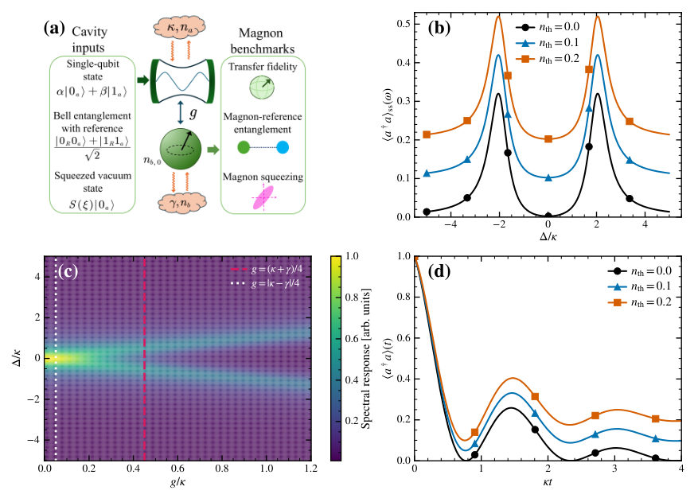
<figcaption class="paper-figure-caption"><b>Fig 1.</b> FIG. 1. (a) Schematic of the cavity–magnon system and the three transfer tasks: single-rail qubit transfer, reference-assisted entanglement transfer, and squeezed-state transfer. The cavity and magnon couple at rate g and dissipate at rates κ and γ, respectively. Their bath occupations are na and nb; nb,0 denotes the initial magnon occupation. (b) Steady-state cavity occupation under a coherent probe for different common bath occupations nth. (c) Coherent cavity response versus coupling strength g/κ and probe detuning ∆/κ. The lines g = |κ −γ|/4 and g = (κ + γ)/4 indicate the onset of splitting in the real parts of the normal-mode frequencies and a conventional linewidth-based...</figcaption>
</figure>
<figure class="paper-figure-card">
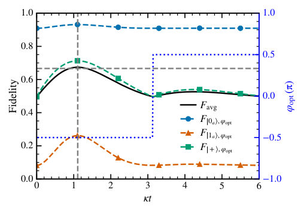
<figcaption class="paper-figure-caption"><b>Fig 2.</b> FIG. 2. Phase-optimized transfer fidelities versus time: the six-state average Favg and the fidelities for |0a⟩, |1a⟩, and |+⟩= (|0a⟩+ |1a⟩)/ √</figcaption>
</figure>
<figure class="paper-figure-card">
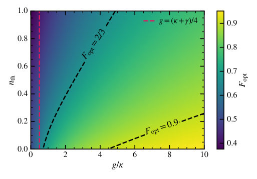
<figcaption class="paper-figure-caption"><b>Fig 3.</b> FIG. 3. Optimal six-state average fidelity Fopt versus g/κ and the common thermal occupation nth. The contours mark Fopt = 2/3 and Fopt = 0.9. The vertical line g = (κ + γ)/4 is a conventional linewidth-based strong-coupling reference. Parameters are κ = γ = 1 and na = nb = nb,0 = nth.</figcaption>
</figure>
<figure class="paper-figure-card">

<figcaption class="paper-figure-caption"><b>Fig 4.</b> FIG. 4. Time-optimized logarithmic negativity EN,opt be- tween the isolated reference and output magnon versus g/κ and nth. The gray region has EN,opt = 0; its boundary is determined by µsym = nth/(1 + nth). The contour marks EN,opt = 0.5, and the vertical line marks the conventional linewidth-based strong-coupling reference g = (κ + γ)/4. Pa- rameters are κ = γ = 1 and na = nb = nb,0 = nth.</figcaption>
</figure>
<figure class="paper-figure-card">
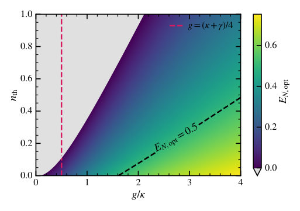
<figcaption class="paper-figure-caption"><b>Fig 5.</b> Figure 4 compares the entanglement-transfer bound- ary with the linewidth-based coupling reference. Here the equal-rate case has been considered by substituting µ = µsym, given in Eq. (38), into Eq. (47). Their different dependence on thermal occupation shows why spectro- scopic hybridization alone cannot determine whether the output remains entangled with its reference. For exam- ple, at g = Γ/2, Eq. (38) gives µsym = e−π/2/2 ≃0.104; reference–magnon entanglement at this coupling requires nth &lt; µsym/(1−µsym) ≃0.116. For a point strictly above the linewidth-based reference, take g = Γ and nth = 0.5. Then µsym ≃0.264, while ν = nth(1 −µsym) ≃0.368 &gt; µsym. Hence in this case the channel is...</figcaption>
</figure>
</div>

<p><strong>Summary.</strong> This paper develops rigorous, operational benchmarks to quantify quantum-state transfer efficiency between a cavity photon mode and a magnon mode. It demonstrates that standard strong-coupling criteria based on spectroscopy are insufficient predictors of actual transfer performance. The results provide quantitative guidelines for controlling thermal noise to ensure high-fidelity quantum information transfer in cavity magnonics.</p>
<p><strong>Why it may be interesting.</strong> This work provides crucial quantitative metrics for assessing the viability of quantum interfaces, showing that simple spectral measurements are insufficient for guaranteeing high-fidelity quantum information transfer in realistic, noisy environments.</p>
<details>
<summary>Detailed structure</summary>
<p><strong>Main problem.</strong> To establish operational benchmarks for quantum-state transfer from an intracavity photon mode to a magnon mode, moving beyond simple spectroscopic strong-coupling criteria.</p>
<p><strong>Main result.</strong> Conventional linewidth-based strong-coupling criteria do not guarantee quantum-transfer performance; entanglement or squeezing can survive below these spectroscopic thresholds if noise is low enough.</p>
<p><strong>Method.</strong> The authors analyze the system dynamics using open-system master equations and derive time-dependent quantum channels, comparing fidelity and entanglement survival against theoretical benchmarks.</p>
<p><strong>Model / system.</strong> The system is a passive, linear cavity–magnon system coupled to independent Markovian thermal reservoirs, described by an interaction Hamiltonian and analyzed via Langevin equations.</p>
<p><strong>Key observables.</strong> Phase-corrected average fidelity ($F_{avg}$), reference–magnon entanglement survival, and the presence of sub-vacuum magnon fluctuations.</p>
<p><strong>Important parameters / regimes.</strong> Coherent transmissivity ($\eta$), output-referred thermal population ($
u$), and the coupling strength ($g$) relative to cavity/magnon decay rates ($\kappa, \gamma$).</p>
<p><strong>Assumptions / limitations.</strong> The system is treated as a passive, linear coupling, and the thermal reservoirs are assumed to be independent and Markovian.</p>
<p><strong>Figures summary.</strong> Figures illustrate the schematic of the three transfer tasks, steady-state cavity occupation vs. bath temperature, spectroscopic thresholds, and time evolution of cavity occupation.</p>
<p><strong>Paper structure.</strong> The paper moves from defining the physical system and the limitations of spectroscopic criteria to deriving quantitative benchmarks based on fidelity, entanglement, and squeezing survival, culminating in task-dependent performance metrics.</p>
</details>
<details>
<summary>Abstract</summary>
<p>Normal-mode splitting reveals coherent cavity--magnon hybridization but does not certify finite-time quantum-state transfer. We describe quantum transfer in a passive, linear cavity--magnon system coupled to thermal reservoirs as a thermal-loss channel specified by its coherent transmissivity $η$ and output-referred thermal population $ν$. For single-rail qubits, we calculate the phase-corrected average fidelity and compare it with the deterministic measure-and-prepare benchmark of $2/3$. A Bell pair shared by the cavity and an isolated reference retains reference--magnon entanglement if and only if $η>ν$. An input squeezed vacuum of strength $r$ yields sub-vacuum magnon fluctuations if and only if $ν<η(1-e^{-2r})/2$. When the initial magnon and both reservoirs have the same occupation, an analytically determined peak-transmissivity time optimizes all three tasks. These task-dependent benchmarks show that a conventional linewidth-based strong-coupling criterion does not guarantee quantum-transfer performance. Conversely, entanglement or squeezing can survive below that spectroscopic reference when the added noise is sufficiently low. These benchmarks provide quantitative targets for transfer timing and thermal-noise control in intracavity-to-magnon quantum interfaces.</p>
</details>
<p><sub><a href="#top">↑ back to top</a></sub></p>

<p><a id="paper-2610.10001"></a></p>
<h3 id="cotunneling-assisted-redistribution-of-nonpassivity-in-a-photosynthetic-junction"><a href="http://arxiv.org/abs/2610.10001v1">Cotunneling-Assisted Redistribution of Nonpassivity in a Photosynthetic Junction</a></h3>
<p><strong>Authors:</strong> Manjet Rajak, Trishna Kalita, Debasish Sharma, Himangshu Prabal Goswami<br>
<strong>Type:</strong> theory · <strong>Category:</strong> statistical mechanics · <strong>PDF:</strong> <a href="https://arxiv.org/pdf/2610.10001v1">https://arxiv.org/pdf/2610.10001v1</a><br>
<strong>Analysis basis:</strong> full PDF text, analyzed in chunks
<strong>Topic relevance:</strong> <code>Keldysh / 2PI / non-Gaussian methods</code> <strong>3/5</strong> · <code>driven-dissipative phase transition</code> <strong>3/5</strong> · <code>methods for driven-dissipative</code> <strong>3/5</strong> · <code>non-equilibrium universality</code> <strong>3/5</strong> · <code>scars &amp; prethermalization</code> <strong>3/5</strong> · <code>quantum measurements</code> <strong>2/5</strong> · <code>correlated / nonlocal dissipation</code> <strong>1/5</strong></p>
<div class="figure-strip-hint">↔ Scroll figures horizontally</div>
<div class="paper-figures-scroll">
<figure class="paper-figure-card">
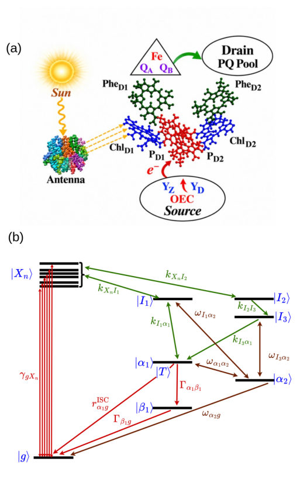
<figcaption class="paper-figure-caption"><b>Fig 1.</b> FIG. 1. Schematic of the PSIIRC modeled as a nonequi- librium quantum junction. (a) Reaction-center organization showing antenna excitation, the OEC as the electronic source, and the acceptor side coupled to the downstream PQ pool. (b) Thirteen-state kinetic model containing the ground, excitonic, charge-transfer, sequential, and cotunneling-assisted states. Optical, internal transfer, sequential transfer, and cotunnel- ing processes are denoted by γgXn, kxy, Γab, and ωab, respec- tively. The vibrational redistribution rates (rmn) between Xm ↔Xn are not shown but included in calculations. |T⟩ represents a triplet state and involves an intersystem crossing recombination.</figcaption>
</figure>
<figure class="paper-figure-card">
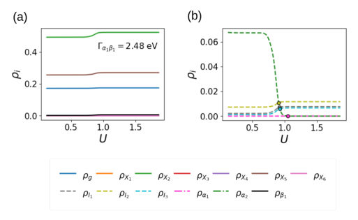
<figcaption class="paper-figure-caption"><b>Fig 2.</b> FIG. 2. Steady-state populations ρi as functions of the Coulomb interaction energy U for Γα1β1 = 2.48 eV. (a) Pop- ulations of all states. (b) Enlarged view of the weakly pop- ulated states near the population redistribution region. All numerical parameters are provided in the SI.</figcaption>
</figure>
<figure class="paper-figure-card">
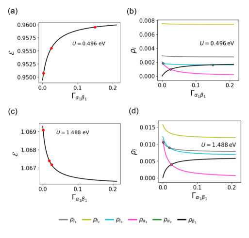
<figcaption class="paper-figure-caption"><b>Fig 3.</b> FIG. 3. Dependence of the ergotropy E and relevant steady state populations ρi on the electron-ejection rate Γα1β1 for two Coulomb interaction energies. Panel (a) shows the er- gotropy at U = 0.496 eV, while panel (b) shows the corre- sponding selected steady state populations. Panel (c) shows the ergotropy at U = 1.488 eV, and panel (d) shows the cor- responding selected steady state populations. The marked points indicate the population-crossing positions associated with changes in the passive state ordering.</figcaption>
</figure>
<figure class="paper-figure-card">
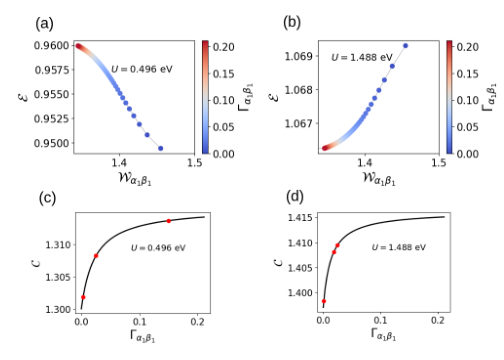
<figcaption class="paper-figure-caption"><b>Fig 4.</b> FIG. 4. Energetic response of the system under variation of Γα1β1 for two Coulomb interaction strengths. Panels (a) and (b) show the ergotropy E as a function of work Wα1β1 for U = 0.496 eV and U = 1.488 eV, respectively, with the color scale indicating Γα1β1. Panels (c) and (d) show the corresponding energetic capacitance C as a function of Γα1β1. The red markers denote the population-crossing points along the Γα1β1 sweep.</figcaption>
</figure>
<figure class="paper-figure-card">
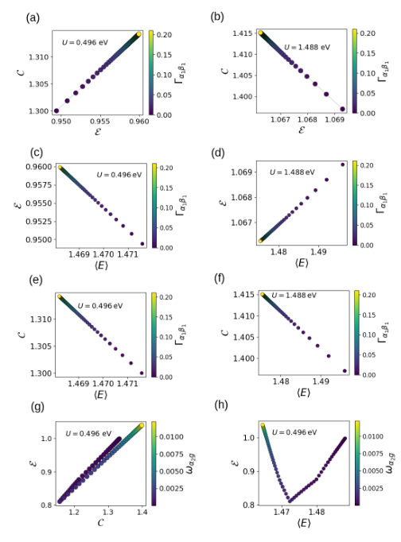
<figcaption class="paper-figure-caption"><b>Fig 5.</b> FIG. 5. Piecewise linear relationships among energetic ca- pacitance C, ergotropy E, and mean energy ⟨E⟩. (a,b) En- ergetic capacitance C as a function of ergotropy E as the electron-ejection rate Γα1β1 is varied for U = 0.496 eV and U = 1.488 eV, respectively. (c,d) Ergotropy E as a function of the mean energy ⟨E⟩for U = 0.496 eV and U = 1.488 eV, respectively. (e,f) Energetic capacitance C as a function of the mean energy ⟨E⟩for U = 0.496 eV and U = 1.488 eV, respectively. The color scale in panels (a)-(f) indicates the corresponding value of Γα1β1. (g) Ergotropy E as a function of energetic capacitance C and (h) ergotropy E as a function of mean energy ⟨E⟩as the cotunneling rate ωα2g is...</figcaption>
</figure>
</div>

<p><strong>Summary.</strong> This work models energy transfer in Photosystem II using a detailed molecular junction approach, incorporating cotunneling effects. By quantifying non-equilibrium energy using ergotropy and energetic capacitance, the authors reveal how electron transport redistributes extractable energy across different molecular sites. The findings highlight the interplay between microscopic quantum transport mechanisms and macroscopic thermodynamic energy ordering.</p>
<p><strong>Why it may be interesting.</strong> The use of ergotropy and energetic capacitance to quantify non-equilibrium energy flow in a complex, open quantum system like a photosynthetic reaction center is highly relevant to non-equilibrium statistical mechanics and quantum thermodynamics.</p>
<details>
<summary>Detailed structure</summary>
<p><strong>Main problem.</strong> The study investigates how the inclusion of cotunneling affects the passive-state ordering and the extractable non-equilibrium energy within a Photosystem II reaction center model.</p>
<p><strong>Main result.</strong> Cotunneling redistributes the extractable non-equilibrium energy among different molecular components, and the analysis shows that thermodynamic smoothness can mask underlying microscopic state rearrangements.</p>
<p><strong>Method.</strong> The authors employ a Nakajima-Zwanzig projection-operator formalism to model the system dynamics, quantifying state ordering using ergotropy and energetic capacitance.</p>
<p><strong>Model / system.</strong> The system is a Photosystem II reaction center modeled as a 13-state nonequilibrium molecular junction, incorporating excitonic, charge-transfer, and cotunneling pathways.</p>
<p><strong>Key observables.</strong> Ergotropy (extractable work), energetic capacitance, and steady-state populations of various electronic states.</p>
<p><strong>Important parameters / regimes.</strong> Coulomb interaction energy (U), transition rates ($\Gamma$, $\omega$), and the degree of non-equilibrium excitation.</p>
<p><strong>Assumptions / limitations.</strong> The analysis treats cotunneling via a microscopically constructed doubly reduced acceptor state and uses a projection-operator approach to derive the master equation.</p>
<p><strong>Figures summary.</strong> Figures illustrate steady-state population maps as a function of Coulomb interaction energy and transition rates, alongside uncertainty analyses of ergotropy and capacitance.</p>
<p><strong>Paper structure.</strong> The paper progresses by first establishing the kinetic model, then introducing cotunneling, quantifying non-equilibrium energy using ergotropy/capacitance, and finally analyzing how these quantities change under varying interaction strengths and rates.</p>
</details>
<details>
<summary>Abstract</summary>
<p>We investigate how cotunneling affects passive-state ordering in a Photosystem II reaction center modelled as a nonequilibrium molecular junction. We use a full pigment excitation manifold, with excitonic and charge-transfer rates computed within a Nakajima-Zwanzig formalism using realistic spectral densities. Cotunneling is introduced through a microscopically constructed doubly reduced acceptor state obtained from relevant quinone-side two-electron configurations, while photoexcitation is allowed into the full excitonic manifold. Passive-state permutations are quantified through ergotropy and energetic capacitance. We find that thermodynamic smoothness in ergotropy and energetic capacitance can conceal microscopic state rearrangements. Cotunneling redistributes the extractable nonequilibrium energy among the quinone acceptor, the donor-pheophytin radical pair, and excitonic states with strong contributions from pigments on the inactive branch. At high Coulomb interaction, cotunneling produces no passive-state reordering. Piecewise-linear relations among ergotropy, energetic capacitance, and mean energy further reveal the population reorderings generated by cotunneling.</p>
</details>
<p><sub><a href="#top">↑ back to top</a></sub></p>

<p><a id="paper-2610.08953"></a></p>
<h3 id="an-efficient-variational-polaron-master-equation-for-non-markovian-spin-boson-dynamics-transformed-initial-states-and-general-observables"><a href="http://arxiv.org/abs/2610.08953v1">An efficient variational polaron master equation for non-Markovian spin-boson dynamics: Transformed initial states and general observables</a></h3>
<p><strong>Authors:</strong> Chien-Chang Chen, Hsi-Sheng Goan<br>
<strong>Type:</strong> theory · <strong>Category:</strong> statistical mechanics · <strong>PDF:</strong> <a href="https://arxiv.org/pdf/2610.08953v1">https://arxiv.org/pdf/2610.08953v1</a><br>
<strong>Analysis basis:</strong> full PDF text, analyzed in chunks
<strong>Topic relevance:</strong> <code>Keldysh / 2PI / non-Gaussian methods</code> <strong>3/5</strong> · <code>correlated / nonlocal dissipation</code> <strong>3/5</strong> · <code>driven-dissipative phase transition</code> <strong>3/5</strong> · <code>methods for driven-dissipative</code> <strong>3/5</strong> · <code>non-equilibrium universality</code> <strong>2/5</strong> · <code>Tavis-Cummings &amp; cavity-many-emitter</code> <strong>1/5</strong> · <code>analog quantum simulation</code> <strong>1/5</strong> · <code>quantum measurements</code> <strong>1/5</strong></p>
<div class="figure-strip-hint">↔ Scroll figures horizontally</div>
<div class="paper-figures-scroll">
<figure class="paper-figure-card">
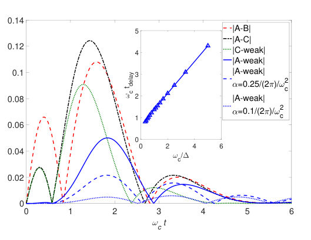
<figcaption class="paper-figure-caption"><b>Fig 1.</b> Figure 2. Absolute differences between the population dy- namics P (t) shown in Fig. 1(d). The blue solid line, “|A-weak|,” denotes the difference between the variational po- laron method with Initial-A and the weak-coupling method. Similarly, “|A-B|” (red dashed line), “|A-C|” (black dash- dotted line), and “|C-weak|” (dark-green dotted line) denote the corresponding differences between the indicated methods or initial-state treatments. The other parameters are the same as those in Fig. 1(d). The |A-weak| curve exhibits a de- lay of approximately ωct = 1 compared with |A-B|, |A-C|, and |C-weak|. This delay may be associated with multi-bath- quanta processes. The inset shows the dependence...</figcaption>
</figure>
<figure class="paper-figure-card">
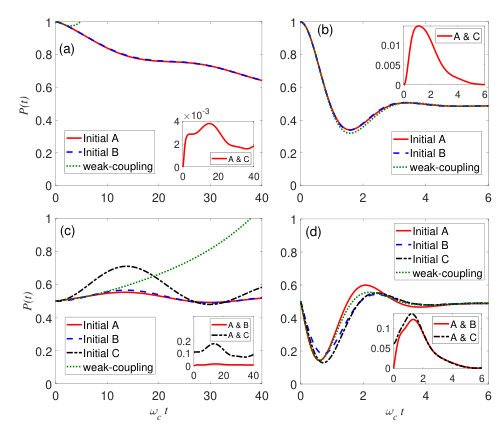
<figcaption class="paper-figure-caption"><b>Fig 2.</b> Figure 1. Dynamics of population P (t) for the spin-boson model calculated using the weak-coupling method (dark-green dotted line), and variational polaron method with the inho- mogeneous terms (Initial-A, red solid line) and without the inhomogeneous terms (Initial-B, blue dashed line; Initial-C, black dash-dotted line) . The initial states and parameters are: (a) |+⟩z, ∆= 0.2ωc. (b) |+⟩z, ∆= 2ωc. (c) |+⟩x, ∆= 0.2ωc. (d) |−⟩y, ∆= 2ωc. The corresponding insets show the time evolutions of the trace distances between the reduced system states evolving from Initial-A and Initial-B, denoted by “A &amp; B” (red solid line), and from Initial-A and Initial-C, denoted by “A &amp; C” (black dash-dotted...</figcaption>
</figure>
<figure class="paper-figure-card">
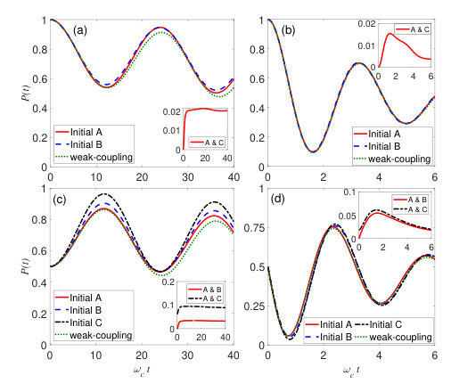
<figcaption class="paper-figure-caption"><b>Fig 3.</b> Figure 3. Dynamics of the population P (t) and the corre- sponding time evolution of the trace distances at zero tem- perature for the setups considered in Fig. 1. The curves in the main panels and insets follow the same notation as in Fig. 1. The initial states and other parameters in panels (a)–(d) are the same as those in Figs. 1(a)–1(d), respectively, except that T = 0.</figcaption>
</figure>
<figure class="paper-figure-card">
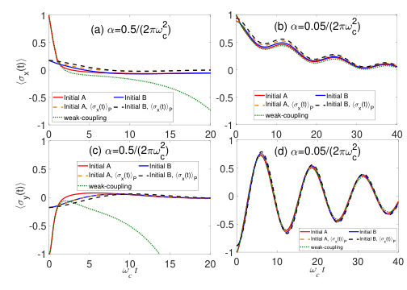
<figcaption class="paper-figure-caption"><b>Fig 4.</b> Figure 4. Dynamics of ⟨σx (t)⟩in panels (a) and (b) and ⟨σy (t)⟩in panels (c) and (d), calculated using the variational polaron method with Initial-A (red) and Initial-B (blue), to- gether with the weak-coupling method (dark-green dotted line). The initial states and system-bath coupling strengths are: (a) |+⟩x, α = 0.5/  2πω2 c  ; (b) |+⟩x, α = 0.05/  2πω2 c  ; (c) |−⟩y, α = 0.5/  2πω2 c  ; and (d) |−⟩y, α = 0.05/  2πω2 c  . For the variational polaron method, the solid lines show the full expectation values obtained from Eq. (69), whereas the dashed lines show the corresponding P-projected parts, ⟨σx (t)⟩P and ⟨σy (t)⟩P . Other parameters are ∆= 0.5ωc, ε = 0.2ωc, and kBT = 4ωc.</figcaption>
</figure>
<figure class="paper-figure-card">
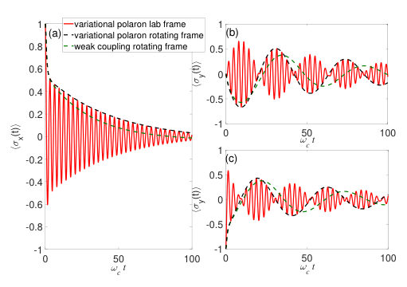
<figcaption class="paper-figure-caption"><b>Fig 5.</b> Figure 5. Dynamics of ⟨σx (t)⟩and ⟨σy (t)⟩for the res- onantly driven spin-boson model with the driving term Ω0 cos (ωLt) σx. The red solid lines show the laboratory-frame results obtained using the variational polaron method with Initial-A, while the red dashed lines show the corresponding dynamics in the rotating frame. The green dashed lines show the rotating-frame results obtained using the weak-coupling method. The corresponding initial states in the laboratory frame are (a) |+⟩x, (b) |+⟩z, and (c) |−⟩y. Other parame- ters are α = 0.17/  2πω2 c  , Ω0 = 0.2ωc, ωL = ε = 2ωc, and kBT = 3ωc.</figcaption>
</figure>
</div>

<p><strong>Summary.</strong> This paper introduces an advanced variational polaron master equation to model non-Markovian dynamics in the spin-boson system. It overcomes major theoretical hurdles by incorporating the effects of arbitrary initial states and general observables into the master equation framework. The resulting formalism offers a highly efficient method to study complex open quantum dynamics across various coupling regimes.</p>
<p><strong>Why it may be interesting.</strong> This work provides a powerful, generalized, and computationally efficient theoretical tool for simulating open quantum systems, which is crucial for understanding decoherence and relaxation in quantum materials and light-matter interactions.</p>
<details>
<summary>Detailed structure</summary>
<p><strong>Main problem.</strong> Accurately describing the non-Markovian dynamics of open quantum systems, particularly when environmental coupling is strong or when initial states are complex.</p>
<p><strong>Main result.</strong> The authors developed a unified, computationally efficient variational polaron master equation formalism that correctly incorporates inhomogeneous terms arising from transformed initial states and general observables.</p>
<p><strong>Method.</strong> The approach uses an extended auxiliary Liouville space to convert complex integro-differential equations into solvable coupled ordinary differential equations, allowing for the unified treatment of coherence and population dynamics.</p>
<p><strong>Model / system.</strong> The study focuses on the quantum spin-boson model, which describes a two-level system coupled to a bosonic environment. The Hamiltonian includes system, bath, and interaction terms, and the dynamics are governed by a master equation.</p>
<p><strong>Key observables.</strong> Population dynamics ($\langle\sigma_z(t)
angle$), coherence dynamics ($\langle\sigma_x(t)
angle$, $\langle\sigma_y(t)
angle$), and trace-distance analysis.</p>
<p><strong>Important parameters / regimes.</strong> Tunneling amplitudes, bath temperatures, and system-bath coupling strengths, analyzed across weak, intermediate, and strong coupling regimes.</p>
<p><strong>Assumptions / limitations.</strong> The formalism extends previous methods by explicitly handling inhomogeneous terms from transformed initial states and general observables, overcoming limitations in previous variational polaron approaches.</p>
<p><strong>Figures summary.</strong> Figure 6 compares the variational polaron results with numerically exact HEOM calculations for population and coherence dynamics across various parameters.</p>
<p><strong>Paper structure.</strong> The paper builds from establishing the model Hamiltonian and master equation, through deriving the variational polaron transformation, and finally extending the framework to incorporate transformed initial states and general observables, benchmarking against HEOM.</p>
</details>
<details>
<summary>Abstract</summary>
<p>We investigate the effects of initial states on the dynamics of a quantum spin-boson model using an efficient variational polaron master equation approach. The transformation of a factorized system-environment initial state into the variational polaron frame introduces inhomogeneous terms in the master equation, essential for accurately describing non-Markovian dynamics beyond the weak coupling regime. To efficiently account for these effects, we formulate the dynamics in an extended auxiliary Liouville space, converting the resulting integro-differential equations into coupled ordinary differential equations. We further introduce a simplified variational polaron technique for computing the time evolution of expectation values of general observables, including those that do not commute with the polaron transformation, overcoming a major limitation of previous approaches and enabling the unified treatment of coherence and population dynamics. The effects of transformed initial states generated from arbitrary factorized initial states are systematically characterized through expectation values and trace-distance analysis, providing insight into the associated bath-relaxation dynamics over a broad range of tunneling amplitudes, temperatures, and coupling strengths. Comparison with the weak-coupling master equation reveals a delay phenomenon associated with multi-bath-quanta processes, pronounced at intermediate coupling strengths and tunneling amplitudes. We further show that coherent superposition initial states induce stronger nonequilibrium effects than localized states, with inhomogeneous terms playing a crucial role in the short-time dynamics. The proposed formalism applies to both undriven and resonantly driven spin-boson models, providing a computationally efficient framework for open quantum-system dynamics with arbitrary factorized initial states and general physical observables.</p>
</details>
<p><sub><a href="#top">↑ back to top</a></sub></p>

<p><a id="paper-2610.09387"></a></p>
<h3 id="distance-structure-of-insertion-kernels-and-local-port-response-in-non-reciprocal-su-schrieffer-heeger-chains"><a href="http://arxiv.org/abs/2610.09387v1">Distance Structure of Insertion Kernels and Local Port Response in Non-Reciprocal Su--Schrieffer--Heeger Chains</a></h3>
<p><strong>Authors:</strong> Xudong Zhang, Bin Guo<br>
<strong>Type:</strong> theory · <strong>Category:</strong> other · <strong>PDF:</strong> <a href="https://arxiv.org/pdf/2610.09387v1">https://arxiv.org/pdf/2610.09387v1</a><br>
<strong>Analysis basis:</strong> full PDF text, analyzed in chunks
<strong>Topic relevance:</strong> <code>Keldysh / 2PI / non-Gaussian methods</code> <strong>3/5</strong> · <code>correlated / nonlocal dissipation</code> <strong>3/5</strong> · <code>driven-dissipative phase transition</code> <strong>3/5</strong> · <code>methods for driven-dissipative</code> <strong>3/5</strong> · <code>non-equilibrium universality</code> <strong>2/5</strong> · <code>analog quantum simulation</code> <strong>1/5</strong> · <code>interference shaping light</code> <strong>1/5</strong> · <code>quantum measurements</code> <strong>1/5</strong></p>
<div class="figure-strip-hint">↔ Scroll figures horizontally</div>
<div class="paper-figures-scroll">
<figure class="paper-figure-card">
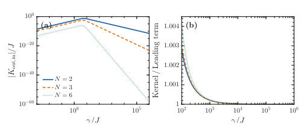
<figcaption class="paper-figure-caption"><b>Fig 1.</b> FIG. 1. Distance scaling of the end-to-end insertion kernel for t1/J = 1, δ/J = 0.4, t2/J = 1.6, ω/J = 4, κ/J = 4, ΓL/J = 1, ΓR/J = 0.6, and chain lengths N = 2, 3, 6. (a) End-to-end kernel magnitude |(Kp)BN−1,A0|/J versus γ/J, showing a finite-insertion peak followed by the power-law de- cay of Eq. (19). (b) Ratio of the exact kernel magnitude to the leading-order prediction of Eq. (19), approaching unity for all three chain lengths as γ/J →∞, confirming the asymptotic scaling.</figcaption>
</figure>
<figure class="paper-figure-card">

<figcaption class="paper-figure-caption"><b>Fig 2.</b> Figure 1 tests both the distance exponent and the lead- ing coefficient of Eq. (19) for N = 2, 3, 6. In each case, the kernel grows at small γ, reaches a finite-insertion max- imum, and crosses over to a strong-insertion power-law tail. The unique end-to-end path has length d = 2N −1, giving tails proportional to γ−2, γ−4, and γ−10 for these three chain lengths. Their increasing steepness thus directly reflects the graph distance between the ports. The ratio of the exact kernel magnitude to Eq. (19) ap- proaches unity, testing the leading coefficient as well as the exponent. This growth-to-decay crossover explains the existence of a finite kernel peak; its relation to ob- servable...</figcaption>
</figure>
<figure class="paper-figure-card">
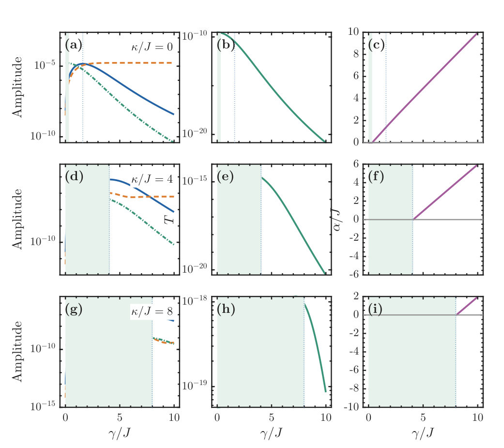
<figcaption class="paper-figure-caption"><b>Fig 3.</b> FIG. 2. Insertion kernel, transmission, and spectral stability for the parameters in Table I. Panels (a–c), (d–f), and (g–i) use κ/J = 0, 4, 8, respectively. (a,d,g) Blue solid, orange dashed, and green dash-dotted curves show |(Kp)B5,A0|/J, J|A≥2|, and J|A|. (b,e,h) Transmission intensity T. (c,f,i) Spectral stability measure α/J. Green shading indicates α &lt; 0; dotted vertical lines mark γK. The transmission maxima in (e,h) precede the corresponding kernel peaks. Responses outside the stable domain are formal frequency-domain values, not attracting steady states. Exact zero amplitudes at γ = 0 are omitted on logarithmic axes.</figcaption>
</figure>
<figure class="paper-figure-card">
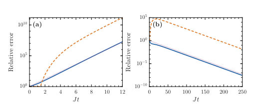
<figcaption class="paper-figure-caption"><b>Fig 4.</b> FIG. 3. Driven convergence at kernel peaks, with parameters as in Table I. Blue solid and orange dashed curves show estate and eout from Eq. (34); purple dotted curves show eαt as rate guides. (a) Unstable peak at κ = 0, γ = 1.6008J. The errors eventually grow, but need not increase monotonically. (b) Stable peak at κ = 4J, γ = 4.0331J. Both errors converge to zero after a transient. The distinct normalizations preclude interpreting their relative heights as energy gain.</figcaption>
</figure>
</div>

<p><strong>Summary.</strong> This work analyzes non-reciprocal SSH chains to understand how internal scattering affects external signal transmission. It develops theoretical tools to separate the contributions from graph path structure, coherent port response, and dynamic settling. The findings offer clear criteria for predicting local transmission enhancement based on system parameters.</p>
<p><strong>Why it may be interesting.</strong> It provides rigorous, channel-specific criteria for interpreting internal scattering effects in open, non-Hermitian quantum systems, which is highly relevant to quantum optics and open quantum systems.</p>
<details>
<summary>Detailed structure</summary>
<p><strong>Main problem.</strong> The paper investigates how enhanced internal scattering in non-reciprocal lattices translates into measurable transmission between fixed external ports.</p>
<p><strong>Main result.</strong> The leading behavior of the end-to-end kernel is determined by the signed sum of shortest directed paths, and local enhancement can be predicted by the coefficient $\chi$ in the weak-insertion regime.</p>
<p><strong>Method.</strong> The analysis uses resolvent techniques, strong-insertion expansions, and similarity transformations to relate the insertion kernel $K_p$ to the coherent transmission intensity $T$.</p>
<p><strong>Model / system.</strong> The model is a non-reciprocal Su-Schrieffer-Heeger (SSH) chain incorporating staggered gain and loss, analyzed using non-Hermitian Hamiltonians.</p>
<p><strong>Key observables.</strong> Coherent transmission intensity ($T$), insertion kernel ($K_p$), and the local predictive coefficient ($\chi$).</p>
<p><strong>Important parameters / regimes.</strong> The gain/loss parameter ($\gamma$), the chain length ($N$), and the degree of non-reciprocity.</p>
<p><strong>Assumptions / limitations.</strong> The analysis relies on fixed frequency baselines and assumes the separation of graph-path structure, coherent port response, and dynamical establishment.</p>
<p><strong>Figures summary.</strong> Figure 1 shows the distance scaling of the end-to-end insertion kernel $|(K_p)_{B N-1, A0}|$ versus $\gamma/J$ for various chain lengths, confirming power-law decay.</p>
<p><strong>Paper structure.</strong> The paper develops the theory by relating the insertion kernel to path sums in the strong-insertion limit, analyzes the weak-insertion limit using the coefficient $\chi$, and finally separates the total response into three distinct physical contributions.</p>
</details>
<details>
<summary>Abstract</summary>
<p>Non-reciprocal lattices offer a flexible setting for directional wave transport, raising the question of how enhanced internal scattering translates into transmission between fixed external ports. We address this question for non-reciprocal Su--Schrieffer--Heeger (SSH) chains with staggered gain and loss by relating the reference-dependent insertion kernel $K_p=VG_pV$ to the coherent transmission intensity $T$. On a fixed finite graph, a strong-insertion expansion gives a contribution proportional to $γ^{1-d}$, whose coefficient is the signed sum of shortest directed paths of length $d$. When this sum is nonzero, it sets the leading behavior independently of fixed diagonal losses; when it cancels, those losses can enter the first surviving higher-order term. For a fixed cross-sublattice endpoint channel, transmission has a strictly negative slope at every nonzero differentiable stationary point of the kernel magnitude. In the weak-insertion regime, the reference-system coefficient $χ=-\mathrm{Re}\,\mathrm{Tr}[(G_{0p}Z)^2]$ predicts the initial transmission change for symmetric SSH ports, and $χ>0$ together with a strictly stable baseline guarantees local stable enhancement. Finite-chain calculations and driven dynamics connect these results to observable response and distinguish asymptotic convergence from transient settling. A strictly dissipative short-chain example exhibits local enhancement without net power gain. Together, these results separate graph-path structure, coherent port response, and dynamical establishment, providing channel-specific criteria for interpreting internal scattering.</p>
</details>
<p><sub><a href="#top">↑ back to top</a></sub></p>

<p><a id="paper-2610.09959"></a></p>
<h3 id="interaction-enhanced-photon-blockade-and-bell-state-protection-in-microwave-shielded-polar-molecules"><a href="http://arxiv.org/abs/2610.09959v1">Interaction-enhanced photon blockade and Bell-state protection in microwave-shielded polar molecules</a></h3>
<p><strong>Authors:</strong> Yun Chen, Geng Zhao, Huanhuan Wei, Jingjun You, Haoran Jia, Jing Tang, Su Yi, Yuangang Deng<br>
<strong>Type:</strong> theory · <strong>Category:</strong> other · <strong>PDF:</strong> <a href="https://arxiv.org/pdf/2610.09959v1">https://arxiv.org/pdf/2610.09959v1</a><br>
<strong>Analysis basis:</strong> full PDF text, analyzed in chunks
<strong>Topic relevance:</strong> <code>Tavis-Cummings &amp; cavity-many-emitter</code> <strong>3/5</strong> · <code>analog quantum simulation</code> <strong>3/5</strong> · <code>correlated / nonlocal dissipation</code> <strong>2/5</strong> · <code>methods for driven-dissipative</code> <strong>2/5</strong> · <code>Full counting statistics</code> <strong>1/5</strong> · <code>driven-dissipative phase transition</code> <strong>1/5</strong> · <code>interference shaping light</code> <strong>1/5</strong> · <code>quantum measurements</code> <strong>1/5</strong> · <code>quantum optics experiment</code> <strong>1/5</strong></p>
<div class="figure-strip-hint">↔ Scroll figures horizontally</div>
<div class="paper-figures-scroll">
<figure class="paper-figure-card">
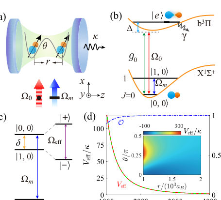
<figcaption class="paper-figure-caption"><b>Fig 1.</b> FIG. 1. (a) Sketch of the microwave-shielded cavity- coupled pair of polar molecules. (b) Molecular po- tentials and relevant electronic structure for engineer- ing a rotational-state-resolved single-photon transition. (c) Schematic for creating π-polarized microwave-dressed molecules. (d) Effective potential Vefffrom numeri- cal diagonalization (solid line) and analytical expression (dashed line), together with state overlap O (dashed- dotted line) for θ = π/2. The inset maps Veffin the r-θ parameter plane for δr = 0.1 and Ωm = 2π × 5 MHz.</figcaption>
</figure>
<figure class="paper-figure-card">
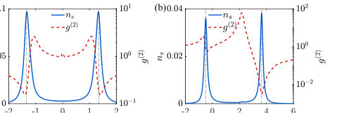
<figcaption class="paper-figure-caption"><b>Fig 2.</b> FIG. 3. Steady-state photon number ns and equal- time correlation function g(2) as functions of cavity de- tuning ∆c/g for (a) weak shielding, Veff/κ = 0.01 at r ≈2 × 104 aB, and (b) strong shielding, Veff/κ = 25.3 at r ≈1.6 × 103 aB, with ∆m = ∆c. The two separa- tions have nearly the same phase factor, cos(kr) ≈0.89, so the difference in blockade performance mainly reflects the shielding-induced interaction. Dot-dashed lines mark the analytical single-photon resonances.</figcaption>
</figure>
<figure class="paper-figure-card">
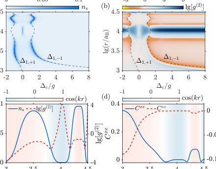
<figcaption class="paper-figure-caption"><b>Fig 3.</b> FIG. 2. (a) Steady-state photon number ns and (b) second-order correlation function g(2) as functions of ∆c and r. The dashed curves denote the analytical single- photon resonances ∆1,±1 obtained from Eq. (5). (c) r- dependence of ns and g(2), and (d) spin correlations Cµµ</figcaption>
</figure>
<figure class="paper-figure-card">
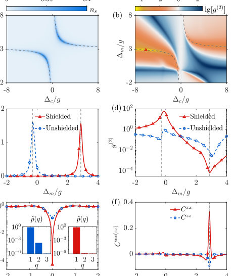
<figcaption class="paper-figure-caption"><b>Fig 4.</b> FIG. 4. (a) Steady-state photon number ns and (b) equal-time second-order correlation function g(2) versus ∆c and ∆m for r ≈1.6 × 103 aB. Dashed curves denote the analytical single-photon resonances from Eq. (4), and the red triangle marks the optimized blockade point. (c) ns and (d) g(2)(0) as functions of ∆m at fixed ∆c. Red solid curves with triangle markers correspond to the strongly shielded configuration at r ≈1.6×103 aB, while blue dashed curves with circle markers correspond to the weakly interacting configuration at r ≈2 × 104 aB with the same fixed ∆c. (e) Time-delayed correlation function g(2)(τ) evaluated at the single-photon resonant points in (c,d). The insets show the...</figcaption>
</figure>
<figure class="paper-figure-card">
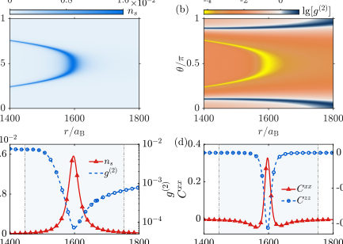
<figcaption class="paper-figure-caption"><b>Fig 5.</b> FIG. 5. Spatial sensitivity of the shielding-enhanced photon blockade at (∆c/g, ∆m/g) = (−6.16, 2.89). (a) Steady-state photon number ns and (b) equal-time second-order correlation function g(2) in the r-θ plane. (c) ns and g(2), and (d) spin correlations Cxx and Czz</figcaption>
</figure>
</div>

<p><strong>Summary.</strong> This paper demonstrates that microwave shielding in polar molecules creates a powerful, tunable interaction resource for cavity QED. This interaction simultaneously enhances photon blockade by increasing spectral anharmonicity and protects quantum states, such as Bell pairs, by suppressing energy loss to the cavity. The findings establish a unified control mechanism for nonlinear optics and quantum state preservation in molecular systems.</p>
<p><strong>Why it may be interesting.</strong> This work directly addresses the frontier of cavity QED by showing how external fields (microwaves) can engineer internal molecular interactions to control fundamental quantum phenomena like photon statistics and coherence protection, which is highly relevant for quantum simulation.</p>
<details>
<summary>Detailed structure</summary>
<p><strong>Main problem.</strong> To investigate how microwave-shielded interactions in polar molecules can serve as a unified resource for engineering strong photon blockade and protecting fragile quantum states within a cavity Quantum Electrodynamics (QED) platform.</p>
<p><strong>Main result.</strong> The anisotropic, interaction-enhanced spectral anharmonicity induced by microwave shielding provides a unified mechanism that simultaneously achieves strong photon blockade and protects molecular Bell states from cavity dissipation.</p>
<p><strong>Method.</strong> The analysis involves deriving an effective Hamiltonian based on projecting the dipole-dipole interaction onto the dressed molecular ground state, followed by solving the dynamics using the Lindblad master equation.</p>
<p><strong>Model / system.</strong> The system is a cavity-QED setup coupling two microwave-shielded polar molecules to a single optical cavity mode. The key interaction resource is the anisotropic van der Waals-like repulsion engineered via microwave dressing of the molecular ground state.</p>
<p><strong>Key observables.</strong> Photon blockade ($g^{(2)}(0) < 1$), spectral anharmonicity, negative longitudinal spin correlations ($C_{zz}$), and fidelity decay rate of a prepared Bell state.</p>
<p><strong>Important parameters / regimes.</strong> Microwave Rabi frequency ($\Omega_m$), cavity decay rate ($\kappa$), molecular decay rate ($\gamma$), and the relative molecular separation ($r$).</p>
<p><strong>Assumptions / limitations.</strong> The analysis assumes the strong-microwave regime where weak optical couplings can be neglected, and that the effective potential derived from second-order virtual couplings is accurate.</p>
<p><strong>Figures summary.</strong> Figures illustrate the setup, the derived effective potential $V_{	ext{eff}}(r)$ showing its dependence on molecular separation, and plots demonstrating $g^{(2)}$ and spin correlations as a function of detuning and molecular configuration.</p>
<p><strong>Paper structure.</strong> The paper first establishes the physical platform and the role of microwave dressing. It then derives the effective interaction potential, using this potential to analyze the spectral structure, which leads to the demonstration of enhanced photon blockade. Finally, it extends this interaction resource to show the protection of quantum states like Bell states.</p>
</details>
<details>
<summary>Abstract</summary>
<p>Microwave shielding has recently emerged as a powerful tool for engineering interactions in ultracold polar molecules, yet its potential for controlling cavity quantum electrodynamics remains largely unexplored. Here, we investigate a molecular cavity quantum electrodynamics platform in which two microwave-shielded polar molecules are coupled to a single optical cavity mode and demonstrate that shielding-induced interactions provide a unified mechanism for both photon blockade and Bell-state protection. The anisotropic interaction reshapes the few-excitation spectrum by enhancing its anharmonicity, thereby suppressing multiphoton transitions and improving the single-photon purity by more than three orders of magnitude. The enhanced blockade is accompanied by the emergence of negative longitudinal spin correlations, revealing the interaction-induced suppression of simultaneous molecular excitations. We further show that the photon statistics are highly sensitive to the relative molecular configuration, with positional variations on the scale of the relative zero-point fluctuation substantially modifying the blockade performance. Beyond few-photon nonlinear optics, the same interaction protects an initially prepared molecular Bell state by dispersively decoupling molecular excitations from the lossy cavity mode, thereby suppressing cavity-mediated dissipation and slowing the fidelity decay. Our results establish microwave-shielded interactions as a unified interaction resource for engineering few-photon nonlinearities and protecting quantum states in molecular cavity-QED systems.</p>
</details>
<p><sub><a href="#top">↑ back to top</a></sub></p>

<p><a id="paper-2610.10279"></a></p>
<h3 id="gaussian-scrooge-ensemble-from-deep-thermalization-in-free-fermions"><a href="http://arxiv.org/abs/2610.10279v1">Gaussian Scrooge Ensemble from Deep Thermalization in Free-Fermions</a></h3>
<p><strong>Authors:</strong> Angelo Russotto, Katja Klobas, Pasquale Calabrese, Bruno Bertini<br>
<strong>Type:</strong> theory · <strong>Category:</strong> statistical mechanics · <strong>PDF:</strong> <a href="https://arxiv.org/pdf/2610.10279v1">https://arxiv.org/pdf/2610.10279v1</a><br>
<strong>Analysis basis:</strong> full PDF text, analyzed in chunks
<strong>Topic relevance:</strong> <code>non-equilibrium universality</code> <strong>3/5</strong> · <code>quantum measurements</code> <strong>3/5</strong> · <code>scars &amp; prethermalization</code> <strong>3/5</strong> · <code>Keldysh / 2PI / non-Gaussian methods</code> <strong>2/5</strong> · <code>correlated / nonlocal dissipation</code> <strong>1/5</strong> · <code>driven-dissipative phase transition</code> <strong>1/5</strong> · <code>methods for driven-dissipative</code> <strong>1/5</strong></p>
<div class="figure-strip-hint">↔ Scroll figures horizontally</div>
<div class="paper-figures-scroll">
<figure class="paper-figure-card">
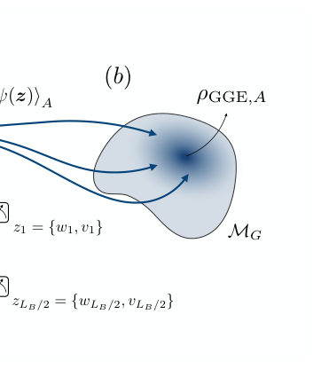
<figcaption class="paper-figure-caption"><b>Fig 1.</b> Figure 1: Deep thermalization in a fermionic Gaussian quantum many-body system. (a) An initial Gaussian state |Ψ0⟩is time-evolved with the XX Hamiltonian (8). At time t the bath B is projectively measured with outcome z = {z1, · · · , zLB/2}. The measurement basis is chosen to break the infinitely many conservation laws of the XX Hamiltonian. (b) The ensemble of post-measurement pure states |ψ(z)⟩A in A ap- proaches, in the thermodynamic limit LB →∞and then t →∞, a Gaussian Scrooge ensemble, a uniform distribution over the manifold MG of Gaussian state, distorted such that the first moment is the reduced Generalized Gibbs Ensemble ρGGE,A.</figcaption>
</figure>
<figure class="paper-figure-card">
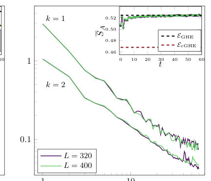
<figcaption class="paper-figure-caption"><b>Fig 2.</b> Figure 2: Left panel: rescaled Frobenius distance ∆(k)/Lk A between the correlation matrix moments of the numerically sampled projected ensemble in Eq. (18) obtained from the infinite temperature Néel quench and the moments of the Gaussian Haar en- semble constrained by the antiunitary symmetry T in Eq. (45) for a subsystem with LA = 2 sites. Solid lines correspond to k = 1, 2 and dashed lines to k = 3, 4. The distances for different moments k approach zero with a power law behaviour indicat- ing convergence of the projected ensemble to the universal constrained Haar Ensemble EcGHE. In the inset we show the time evolution of the space-averaged SA von Neumann entanglement entropy of the...</figcaption>
</figure>
<figure class="paper-figure-card">
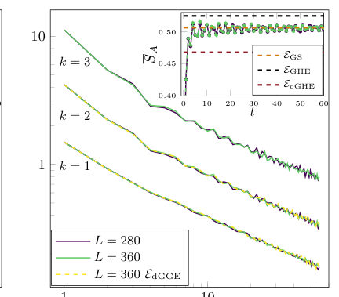
<figcaption class="paper-figure-caption"><b>Fig 3.</b> Figure 3: Left panel: Frobenius distance ∆(k) between the correlation matrix moments of the numerically sampled projected ensemble in Eq. (18) obtained from the finite temperature dimer quench with α = 0.5 and the moments obtained from the Gaussian Scrooge ensemble (solid lines) on a subsystem of LA = 4 sites, defined in Eq. (56). The dashed line shows the same quantity but when computing the distance ∆(k) with respect to the deep-GGE obtained by performing the measurements on a global representative state [31], the results are indistinguishable within the statistical uncertainty. Inset: Time evolution of the space-averaged SA von Neumann entanglement entropy of the subsystem A as in Eq....</figcaption>
</figure>
</div>

<p><strong>Summary.</strong> This work explores deep thermalization in free-fermion systems by studying the ensemble of pure states remaining in a subsystem after measurements on its environment. The key finding is that in the thermodynamic limit, the statistics of these conditional states are universal, described by a fermionic Gaussian Scrooge ensemble. This extends thermalization theory to account for the full statistics of quantum measurements.</p>
<p><strong>Why it may be interesting.</strong> It provides a rigorous, non-equilibrium generalization of thermalization concepts, moving beyond just the reduced density matrix to characterize the statistics of conditional pure states, which is highly relevant for open quantum systems.</p>
<details>
<summary>Detailed structure</summary>
<p><strong>Main problem.</strong> The paper investigates deep thermalization, specifically how the universal ensemble of pure states in a subsystem emerges after local measurements on its environment.</p>
<p><strong>Main result.</strong> The partial information about local conserved charges becomes negligible in the thermodynamic limit, leading to a universal description governed by a fermionic Gaussian Scrooge ensemble.</p>
<p><strong>Method.</strong> The authors analyze the projected ensemble by considering the first and higher moments of the conditional pure states resulting from projective measurements on the environment.</p>
<p><strong>Model / system.</strong> The system is a free-fermion chain governed by a Gaussian integrable Hamiltonian, bipartitioned into a subsystem A and an environment B.</p>
<p><strong>Key observables.</strong> The projected ensemble, characterized by its correlation matrix and its moments, and the reduced density matrix $
ho_A$.</p>
<p><strong>Important parameters / regimes.</strong> The thermodynamic limit ($L_B 	o \infty$) and the late-time limit ($t 	o \infty$).</p>
<p><strong>Assumptions / limitations.</strong> The analysis assumes the system Hamiltonian is Gaussian and integrable, and that the partial information about conserved charges becomes irrelevant in the thermodynamic limit.</p>
<p><strong>Figures summary.</strong> Figure 1 illustrates the process: an initial Gaussian state evolves, is measured on the bath B, and the resulting ensemble approaches a Gaussian Scrooge ensemble whose first moment matches the reduced GGE.</p>
<p><strong>Paper structure.</strong> The paper progresses by defining the measurement process, analyzing the role of local conserved charges, and deriving the universal form of the projected ensemble (the Scrooge ensemble) in the thermodynamic limit.</p>
</details>
<details>
<summary>Abstract</summary>
<p>Deep thermalization indicates the emergence of universal ensembles of pure states in a subsystem after measuring its environment. We investigate this phenomenon in a free-fermion chain using local measurements that preserve Gaussianity and break particle-number conservation. Although the measurement outcomes provide partial information about local conserved charges within a finite subsystem, we argue that this information becomes negligible in the thermodynamic limit. This effective non-revelation underlies the emergence of a fermionic Gaussian Scrooge ensemble, determined by the subsystem's generalized Gibbs ensemble. We construct this universal ensemble directly at the subsystem level and provide numerical evidence that it describes the late-time projected ensemble at finite temperature. Our results extend the description of thermalization in non-interacting integrable systems beyond the reduced density matrix to universal statistics of conditional pure states.</p>
</details>
<p><sub><a href="#top">↑ back to top</a></sub></p>

<p><a id="paper-2610.09413"></a></p>
<h3 id="non-hermitian-cooperation-induced-chern-insulator"><a href="http://arxiv.org/abs/2610.09413v1">Non-Hermitian Cooperation Induced Chern Insulator</a></h3>
<p><strong>Authors:</strong> Weiwei Zhu, Bingbing Wang, Mengxiang Xie, Hong-yu Zou, Yang Long, Hong-xiang Sun, Haoran Xue, Jie Ren<br>
<strong>Type:</strong> theory · <strong>Category:</strong> other · <strong>PDF:</strong> <a href="https://arxiv.org/pdf/2610.09413v1">https://arxiv.org/pdf/2610.09413v1</a><br>
<strong>Analysis basis:</strong> full PDF text, analyzed in chunks
<strong>Topic relevance:</strong> <code>analog quantum simulation</code> <strong>3/5</strong> · <code>driven-dissipative phase transition</code> <strong>3/5</strong> · <code>methods for driven-dissipative</code> <strong>3/5</strong> · <code>correlated / nonlocal dissipation</code> <strong>2/5</strong> · <code>non-equilibrium universality</code> <strong>2/5</strong> · <code>Keldysh / 2PI / non-Gaussian methods</code> <strong>1/5</strong></p>
<div class="figure-strip-hint">↔ Scroll figures horizontally</div>
<div class="paper-figures-scroll">
<figure class="paper-figure-card">
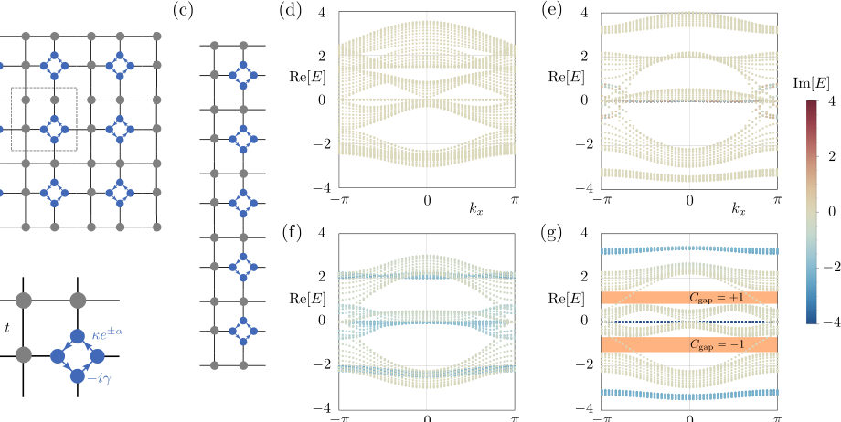
<figcaption class="paper-figure-caption"><b>Fig 1.</b> Fig. 1. Non-Hermitian cooperation enables a Chern insulator. (a) Schematic of the finite lattice structure. The unit cell is marked by a dashed box, and four lossy sites (blue) form a chiral non-Hermitian ”molecule”. (b) Enlarged view of a single unit cell, showing the real couplings t (solid black lines), on-site loss −iγ (blue dots), and non-reciprocal couplings κe±α (blue directed lines, with arrows indicating the hopping direction) (c) Strip geometry used for band calculations, with periodic boundary conditions along x and open boundaries along y. (d)–(g) Projected band structures under four conditions: (d) Hermitian limit (γ = 0, α = 0); (e) only asymmetric couplings (γ = 0, α = 1);...</figcaption>
</figure>
<figure class="paper-figure-card">
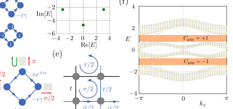
<figcaption class="paper-figure-caption"><b>Fig 2.</b> Fig. 2. Non-Hermitian chiral molecule, spectral properties, and the effective Hofstadter model. (a) The four lossy sites are extracted from the full lattice to form a non-Hermitian chiral ”molecule” with non-reciprocal couplings κe±α and on-site loss −iγ. (b) Complex eigenvalue spectrum of the chiral molecule in the coexistence regime [κ = 1, γ = 2 sinh(1), α = 1]. The slowest-decaying mode (red dot, with the smallest imaginary part in magnitude) is well separated from three highly lossy modes (green dots), rendering it dynamically dom- inant. (c) Eigenstate of the dominant mode, showing a phase wind- ing of 2π around the four sites, indicating that it carries an orbital angular momentum....</figcaption>
</figure>
<figure class="paper-figure-card">
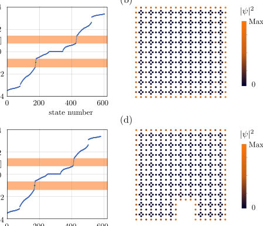
<figcaption class="paper-figure-caption"><b>Fig 3.</b> Fig. 3. Finite-lattice spectra and field profiles validating the topolog- ical protection against local perturbations. (a) Eigenenergy spectrum of a finite 10 × 10 lattice with open boundary conditions; a represen- tative edge state is marked by a green dot. (b) Spatial distribution of the field amplitude for the green-marked edge state, illustrating its boundary localization. (c) Eigenenergy spectrum of the same lattice but with intentionally introduced defects; the persistent edge state (green dot) remains inside the bulk gap. (d) Field profile of the edge state in the defective lattice, demonstrating the robustness of topo- logical edge state.</figcaption>
</figure>
</div>

<p><strong>Summary.</strong> This paper demonstrates that a Chern insulator can be realized in a static lattice solely by combining on-site loss and non-reciprocal couplings, bypassing the need for external magnetic fields. The mechanism involves the slow-decaying mode of a chiral non-Hermitian molecule generating an effective synthetic magnetic flux. This establishes non-Hermitian cooperation as a powerful new resource for topological engineering in open systems.</p>
<p><strong>Why it may be interesting.</strong> This work provides a general theoretical framework for engineering topological phases using only intrinsic non-Hermitian couplings, which is highly relevant for designing open quantum systems and non-reciprocal devices.</p>
<details>
<summary>Detailed structure</summary>
<p><strong>Main problem.</strong> To establish a fundamentally new paradigm for inducing Chern topology in a static lattice without relying on external magnetic fields, synthetic gauge potentials, or pre-existing Hermitian topology.</p>
<p><strong>Main result.</strong> The synergy between on-site loss and non-reciprocal coupling is sufficient to open a topological gap and generate robust chiral edge states with a quantized Chern number.</p>
<p><strong>Method.</strong> The mechanism is analyzed by projecting the full Hamiltonian onto the dynamically dominant mode of a non-Hermitian chiral molecule, effectively mapping the system to a synthetic Hofstadter model.</p>
<p><strong>Model / system.</strong> The model uses a static lattice structure containing four non-Hermitian sites, characterized by on-site loss ($-i\gamma$) and non-reciprocal couplings ($\kappa e^{\pm \alpha}$). The system is analyzed via its Bloch Hamiltonian, which is block-form.</p>
<p><strong>Key observables.</strong> Quantized Chern number (C), chiral edge states, and the effective synthetic magnetic flux ($\pi/2$ per plaquette).</p>
<p><strong>Important parameters / regimes.</strong> The coexistence regime ($\gamma 
eq 0$ and $\alpha 
eq 0$) is crucial; individual non-Hermitian effects are insufficient.</p>
<p><strong>Assumptions / limitations.</strong> The analysis relies on a projection reduction technique that eliminates fast-decaying degrees of freedom to isolate the slowest-decaying, dynamically dominant mode.</p>
<p><strong>Figures summary.</strong> Figures illustrate the lattice structure, the spectral analysis of the chiral molecule, the resulting effective Hofstadter unit cell, and the projected band structures showing gap opening only in the coexistence regime.</p>
<p><strong>Paper structure.</strong> The paper first introduces the problem of field-free topology, then details the Hamiltonian structure involving loss and non-reciprocity. The core of the work involves analyzing the chiral molecule's dynamics and projecting the system to reveal the effective synthetic flux, culminating in the calculation of the non-zero Chern number.</p>
</details>
<details>
<summary>Abstract</summary>
<p>Conventional Chern insulators rely on breaking time-reversal symmetry via magnetic fields or synthetic gauge fields. Here we introduce a fundamentally different paradigm: a static lattice without any gauge field becomes a Chern insulator solely through the cooperation of two non-Hermitian ingredients: on-site loss and non-reciprocal coupling. Neither effect alone suffices; only their synergy opens a topological gap and gives rise to robust chiral edge states with a nonzero Chern number. The underlying mechanism originates from a non-Hermitian chiral molecule formed by the lossy sites, whose dynamically dominant mode carries an orbital angular momentum that effectively generates a synthetic flux after the fast-decaying degrees of freedom are eliminated. Our results establish non-Hermitian cooperation as a versatile resource for inducing Chern topology without external fields or temporal modulations, opening a new route to topological phases in open classical and quantum systems.</p>
</details>
<p><sub><a href="#top">↑ back to top</a></sub></p>

<p><a id="paper-2610.09103"></a></p>
<h3 id="when-the-coupler-is-the-channel-an-and-condition-on-cavity-photon-number-means"><a href="http://arxiv.org/abs/2610.09103v1">When the coupler is the channel: an AND condition on cavity photon-number means</a></h3>
<p><strong>Authors:</strong> Yueying Wu<br>
<strong>Type:</strong> theory · <strong>Category:</strong> other · <strong>PDF:</strong> <a href="https://arxiv.org/pdf/2610.09103v1">https://arxiv.org/pdf/2610.09103v1</a><br>
<strong>Analysis basis:</strong> full PDF text, analyzed in chunks
<strong>Topic relevance:</strong> <code>quantum measurements</code> <strong>3/5</strong> · <code>Full counting statistics</code> <strong>2/5</strong> · <code>analog quantum simulation</code> <strong>2/5</strong> · <code>methods for driven-dissipative</code> <strong>2/5</strong> · <code>Keldysh / 2PI / non-Gaussian methods</code> <strong>1/5</strong> · <code>Tavis-Cummings &amp; cavity-many-emitter</code> <strong>1/5</strong> · <code>correlated / nonlocal dissipation</code> <strong>1/5</strong> · <code>driven-dissipative phase transition</code> <strong>1/5</strong> · <code>interference shaping light</code> <strong>1/5</strong></p>
<div class="figure-strip-hint">↔ Scroll figures horizontally</div>
<div class="paper-figures-scroll">
<figure class="paper-figure-card">
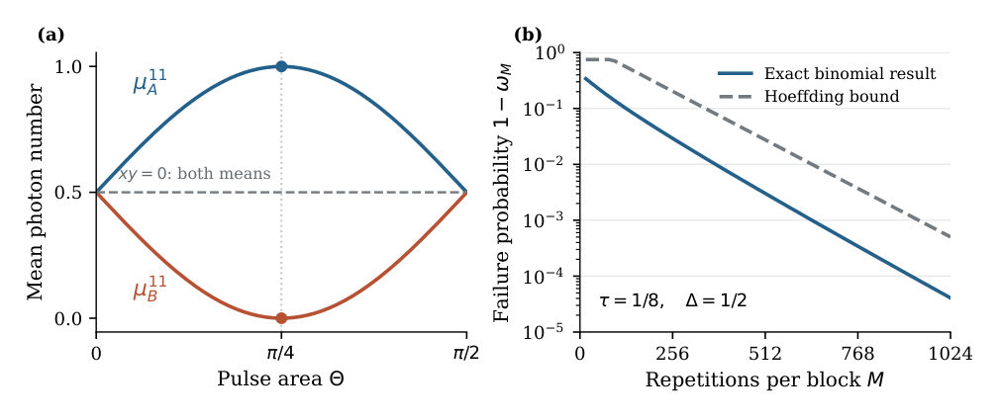
<figcaption class="paper-figure-caption"><b>Fig 1.</b> Figure 1: Analytical predictions, not experimental data. (a) Mean photon numbers for the two-pump input 11 as a function of pulse area Θ. The other three inputs retain both means at 1/2. The marked pulse area π/4 produces (1, 0). (b) Exact finite-block failure probability from Eq. (12), with M independent repetitions per block, τ = 1/8, and ∆= 1/2. The dashed curve is the Hoeffding upper bound, capped at the trivial bound 3/4. These are performance curves for the interacting protocol, not finite-sample Bell bounds.</figcaption>
</figure>
</div>

<p><strong>Summary.</strong> This paper demonstrates a physical mechanism using coupled optical cavities to realize an exact 'AND' logic gate based on mean photon number measurements. By engineering a controlled beam-splitter interaction, the authors show that the system's mean output perfectly reflects the logical AND operation, surpassing the limits imposed by classical no-signalling theories, all without requiring entanglement.</p>
<p><strong>Why it may be interesting.</strong> This work provides a concrete, controllable quantum optical realization of a non-classical correlation (the AND gate) using mean photon number measurements, which is highly relevant for quantum communication protocols and resource quantification in cavity QED.</p>
<details>
<summary>Detailed structure</summary>
<p><strong>Main problem.</strong> The paper investigates realizing an exact 'AND condition' on the mean photon numbers of two coupled cavities, meaning the means are equal if at least one control is off, and unequal only if both controls are on.</p>
<p><strong>Main result.</strong> The authors provide an elementary construction using a two-pump beam-splitter interaction that achieves this AND condition exactly at the mean level, and they show this resource does not require entanglement.</p>
<p><strong>Method.</strong> The analysis uses theoretical construction based on controlled unitary evolution and compares the achievable mean response against the bounds set by no-signalling distributions.</p>
<p><strong>Model / system.</strong> The physical system consists of two cavity modes (A and B) coupled via a two-pump beam-splitter interaction, described by a controlled Hamiltonian $H_{xy}(t) = \hbar xy g(t)(a^\dagger b + b^\dagger a)$.</p>
<p><strong>Key observables.</strong> Conditional mean photon numbers ($\mu_{xy}^A, \mu_{xy}^B$), the ideal population-level score ($\omega_\mu$), and the no-signalling score ($\omega_{NS}^\mu$).</p>
<p><strong>Important parameters / regimes.</strong> The interaction strength $\Theta$ (pulse area) and the input controls $x, y \in \{0, 1\}$.</p>
<p><strong>Assumptions / limitations.</strong> The analysis focuses on mean values and provides a finite-sample counting protocol, though the resource is shown to be achievable even with coherent product states.</p>
<p><strong>Figures summary.</strong> Figure 1(a) illustrates the mean photon numbers for the $xy=1$ input as a function of pulse area $\Theta$. Figure 1(b) compares the finite-block failure probability against the Hoeffding upper bound.</p>
<p><strong>Paper structure.</strong> The paper introduces the problem of the AND condition, presents the physical model and the ideal construction achieving $\omega_\mu=1$, derives the no-signalling bound ($\omega_{NS}^\mu = 3/4$), and concludes by showing the resource is realizable without entanglement.</p>
</details>
<details>
<summary>Abstract</summary>
<p>Can two cavities have equal mean photon numbers whenever at least one of two binary controls is off, and unequal means only when both controls are on? We give an elementary construction using a two-pump beam-splitter interaction whose strength is proportional to the product of the controls. A phase-coherent single-excitation state yields mean occupations $(1/2,1/2)$ for inputs $00$, $01$, and $10$, and $(1,0)$ for input $11$. This realizes the desired AND condition exactly at the level of population means. It also makes the communication resource explicit: the interaction acts after the inputs are supplied and changes local statistics with the remote input. For any no-signalling distribution with finite means, the corresponding exact-mean score is at most $3/4$ under uniform inputs. We give a robust consistency inequality, a finite-sample counting protocol, and a coherent-state realization showing that this mean response does not require entanglement. The construction provides a concrete example for distinguishing controlled interactions from nonlocal-game resources.</p>
</details>
<p><sub><a href="#top">↑ back to top</a></sub></p>

<p><a id="paper-2610.10048"></a></p>
<h3 id="coupled-quantum-critical-states-in-a-circuit-simulator"><a href="http://arxiv.org/abs/2610.10048v1">Coupled quantum critical states in a circuit simulator</a></h3>
<p><strong>Authors:</strong> D. B. Karki, Andrew K. Mitchell<br>
<strong>Type:</strong> theory · <strong>Category:</strong> strongly correlated electrons · <strong>PDF:</strong> <a href="https://arxiv.org/pdf/2610.10048v1">https://arxiv.org/pdf/2610.10048v1</a><br>
<strong>Analysis basis:</strong> full PDF text, analyzed in chunks
<strong>Topic relevance:</strong> <code>analog quantum simulation</code> <strong>3/5</strong> · <code>Keldysh / 2PI / non-Gaussian methods</code> <strong>2/5</strong> · <code>driven-dissipative phase transition</code> <strong>2/5</strong> · <code>methods for driven-dissipative</code> <strong>2/5</strong> · <code>non-equilibrium universality</code> <strong>2/5</strong> · <code>correlated / nonlocal dissipation</code> <strong>1/5</strong> · <code>quantum measurements</code> <strong>1/5</strong></p>
<div class="figure-strip-hint">↔ Scroll figures horizontally</div>
<div class="paper-figures-scroll">
<figure class="paper-figure-card">
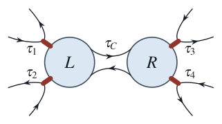
<figcaption class="paper-figure-caption"><b>Fig 1.</b> FIG. 1. Two-site charge-Kondo circuit, in which two coupled metallic islands are each connected to two external leads. The setup allows to explore the fate of coupled critical states.</figcaption>
</figure>
<figure class="paper-figure-card">
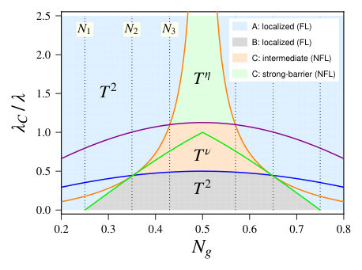
<figcaption class="paper-figure-caption"><b>Fig 2.</b> FIG. 3. Ground state phase diagram and scaling behavior of transport properties obtained by QBM. The blue, orange, green and purple curves denote KBC, KAC, KAB, and Kst.</figcaption>
</figure>
</div>

<p><strong>Summary.</strong> This paper theoretically analyzes coupled quantum critical states in a two-site quantum circuit simulator. Using advanced techniques like NRG and Bosonization, the authors map out the phase diagram, showing that while individual critical points persist, strong inter-site coupling ultimately drives the system into a conventional Fermi Liquid state. This work provides a detailed understanding of quantum criticality in tunable mesoscopic conductors.</p>
<p><strong>Why it may be interesting.</strong> The detailed analysis of quantum critical points and their stability under coupling is highly relevant to understanding emergent quantum phases in artificial quantum materials and mesoscopic devices.</p>
<details>
<summary>Detailed structure</summary>
<p><strong>Main problem.</strong> The study investigates how coupled quantum critical states, specifically those arising from the two-channel-Kondo (2CK) point, behave when subjected to inter-site coupling.</p>
<p><strong>Main result.</strong> Weak coupling preserves the individual critical points, but increasing coupling drives a quantum phase transition from a Non-Fermi Liquid (NFL) state to a screened Fermi Liquid (FL) state.</p>
<p><strong>Method.</strong> The research employs a combination of theoretical techniques, including Bosonization, Quantum Brownian Motion, and Numerical Renormalization Group (NRG) calculations.</p>
<p><strong>Model / system.</strong> The system is a hybrid metal-semiconductor quantum circuit simulator comprising two coupled metallic islands, modeled by a Hamiltonian incorporating continuum electron spectra, tunneling (QPC), and charging energies.</p>
<p><strong>Key observables.</strong> Impurity entropy (Simp(T)), local susceptibilities ($\chi_{loc}^{s,u}(T)$), and transport/conductance exponents ($\eta, 
u$).</p>
<p><strong>Important parameters / regimes.</strong> Inter-site coupling strength ($t_C$), island-lead coupling ($t$), and gate-tuned filling ($   ext{Ng}_\alpha$).</p>
<p><strong>Assumptions / limitations.</strong> The analysis relies on projecting the charge dynamics onto pseudospin-$rac{1}{2}$ degrees of freedom and analyzing the system in both Kondo and quasiballistic limits.</p>
<p><strong>Figures summary.</strong> Figures illustrate the circuit schematic, NRG results showing entropy and susceptibilities, and a phase diagram mapping out different quantum regimes based on coupling ratios and gate detuning.</p>
<p><strong>Paper structure.</strong> The paper builds from defining the physical circuit and Hamiltonian, applying NRG and Bosonization methods to analyze the crossover between decoupled 2CK states, intermediate NFL regimes, and the final screened FL state.</p>
</details>
<details>
<summary>Abstract</summary>
<p>Hybrid metal-semiconductor quantum circuits offer a controlled setting for realizing and probing strongly correlated quantum matter. A largely open question that may be addressed by such simulators is whether coupled critical states can combine into new non-Fermi liquid (NFL) phases. Inspired by the recent realization of a two-site charge-Kondo circuit [W. Pouse \textit{et al.}, \href{https://www.nature.com/articles/s41567-022-01905-4}{Nat. Phys. \textbf{19}, 492 (2023)}], we uncover the fate of coupled Kondo anyons emerging from the two-channel-Kondo critical point at each site. Bosonization and quantum Brownian motion methods yield the full quasiballistic phase diagram and low-temperature transport properties, while numerical renormalization group calculations resolve the complementary weak-coupling limit. Together, these provide a unified description, and reveal robust NFL phases with continuously tunable transport and susceptibility exponents. Stronger inter-site coupling ultimately produces a screened Fermi liquid.</p>
</details>
<p><sub><a href="#top">↑ back to top</a></sub></p>

<p><a id="paper-2610.08942"></a></p>
<h3 id="matter-wave-bistability-with-a-momentum-chirped-bose-einstein-condensate"><a href="http://arxiv.org/abs/2610.08942v1">Matter wave bistability with a momentum chirped Bose-Einstein condensate</a></h3>
<p><strong>Authors:</strong> Mikhail Mamaev, Nicholas Mantella, Noah P. Baker, Joseph McGowan, Aephraim M. Steinberg<br>
<strong>Type:</strong> theory · <strong>Category:</strong> quantum gases · <strong>PDF:</strong> <a href="https://arxiv.org/pdf/2610.08942v1">https://arxiv.org/pdf/2610.08942v1</a><br>
<strong>Analysis basis:</strong> full PDF text, analyzed in chunks
<strong>Topic relevance:</strong> <code>analog quantum simulation</code> <strong>3/5</strong> · <code>interference shaping light</code> <strong>3/5</strong> · <code>Keldysh / 2PI / non-Gaussian methods</code> <strong>2/5</strong> · <code>driven-dissipative phase transition</code> <strong>2/5</strong> · <code>methods for driven-dissipative</code> <strong>2/5</strong> · <code>quantum measurements</code> <strong>1/5</strong></p>
<div class="figure-strip-hint">↔ Scroll figures horizontally</div>
<div class="paper-figures-scroll">
<figure class="paper-figure-card">
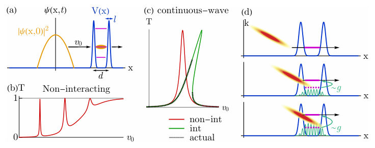
<figcaption class="paper-figure-caption"><b>Fig 1.</b> FIG. 1. (a) Schematic of the system. A 1D BEC is launched at velocity v0 towards a double-barrier potential forming a Fabry-Perot cavity of width d. Each barrier is a Gaussian of width l and height V0. (b) The transmission spectrum for a non-interacting BEC as a function of initial velocity. Transmission approaches T = 1 once the incident energy is much higher than V0, but can also reach T = 1 near cavity resonances. (c) Cartoon schematic of how the transmission spectrum is distorted by interactions in the continuous-wave limit (an infinitely spatially extended wavepacket). The red curve is non-interacting transmission, the green curve shows the multi-valued spectrum for an interacting gas,...</figcaption>
</figure>
<figure class="paper-figure-card">
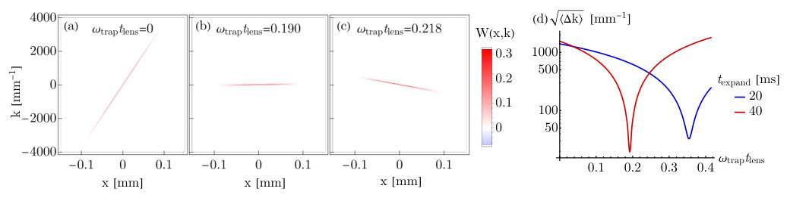
<figcaption class="paper-figure-caption"><b>Fig 2.</b> FIG. 2. (a) Wigner function of the condensate after texpand = 40 ms of free expansion. (b-c) Wigner function of the condensate after applying a delta-kick with the harmonic trap, rotating the phase-space distribution by an amount ωtraptlens. Panel (b) shows the kick with lensing time tlens = topt (given by topt = 1.38 ms for these parameters) that yields a momentum-minimized state, while panel (c) shows an over-rotated (i.e. anti-chirped) state. The chirp angle for these is given by θ = ωtrap(tlens −topt), which is θ = −0.19, 0, 0.28 for panels (a-c) respectively. (d) Momentum variance of the state versus rotation angle ωtraptlens for different amounts of initial expansion time before the...</figcaption>
</figure>
<figure class="paper-figure-card">
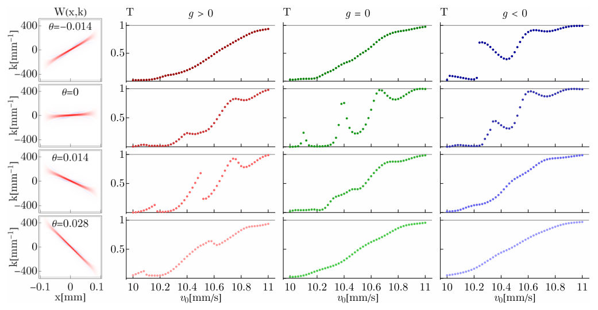
<figcaption class="paper-figure-caption"><b>Fig 3.</b> FIG. 3. Transmission probability T versus incident velocity v0 of the wavepacket for repulsive g &gt; 0, non-interacting g = 0 and attractive g &lt; 0 interactions. We also vary the initial chirp angle θ; the initial state’s Wigner function for each row of panels is shown in the corresponding left panel (before being kicked towards the cavity, hence centered at momentum k = 0 rather than k = k0). For all simulations, the initial state is prepared assuming a repulsive interaction g &gt; 0 and texpand = 40 ms of expansion time; the interaction strength g is quenched to zero or negative values for the corresponding columns of panels during the collision dynamics only.</figcaption>
</figure>
<figure class="paper-figure-card">
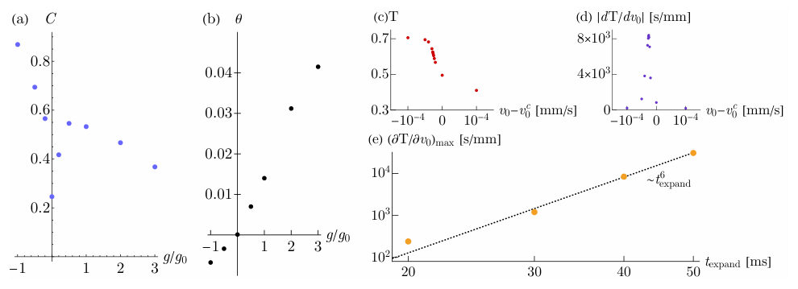
<figcaption class="paper-figure-caption"><b>Fig 4.</b> FIG. 4. (a) Maximum contrast of the transmission spectra from Fig. 3 with a coarse-grained velocity resolution of ∆v0 = 5µm/s, as a function of interaction strength g. The interaction strength is normalized by the usual value g0/h = 7.6 Hz ×mm used in all prior simulations (corresponding to a positive scattering length of 96a0 for 87Rb). Each point is shown for the chirp angle θ that yields maximum contrast. (b) Optimal chirp angle for maximum contrast. (c) Transmission spectrum for g = g0 near the near-discontinuous portion of the most visible resonance at velocity vc 0 = 10.5106 mm/s. (d) Derivative of the transmission with respect to velocity v0. (e) Maximum derivative as a function of...</figcaption>
</figure>
<figure class="paper-figure-card">
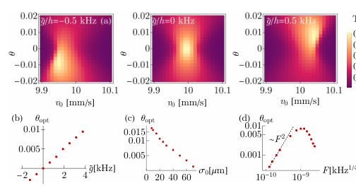
<figcaption class="paper-figure-caption"><b>Fig 5.</b> FIG. 5. (a) Transmission probability for different interaction strengths, chirp angles and initial velocities, obtained from our analytic approach via Eqs. (9), (14). We set the cavity bound state energy to Eb/h = 11 kHz, the cavity position to x0 = 250 µm, the initial Gaussian state width to σ0 = 30 µm, and the lensing harmonic oscillator length to aho = 2.3 µm (corresponding to the same ωtrap = 22 Hz used in earlier simulations). The scattering-bound coupling prefactor is set to F = 10−9kHz1/4 (the unit is due to our choice of energy normalization of scattering states, see Appendix B for details). (b-d) Optimal chirp angle, obtained by maximizing transmission T over all v0 and θ. We keep...</figcaption>
</figure>
</div>

<p><strong>Summary.</strong> This theoretical work demonstrates how to overcome the limitation of mean-field interactions washing out nonlinear features in matter-wave interferometry. By applying a precisely engineered momentum anti-chirp to a Bose-Einstein condensate, the authors predict the realization of matter-wave bistability and high-contrast resonance spectra. This opens pathways for new quantum technologies like matter-wave switching and high-precision velocity sensing.</p>
<p><strong>Why it may be interesting.</strong> This work directly addresses the practical limitations of using BECs for high-precision quantum measurements by providing a specific, controllable technique (momentum chirping) to counteract mean-field decoherence effects.</p>
<details>
<summary>Detailed structure</summary>
<p><strong>Main problem.</strong> The primary challenge is observing nonlinear matter-wave features, such as bistability, in interferometry experiments using Bose-Einstein condensates (BECs) because mean-field interactions typically broaden and wash out these resonances.</p>
<p><strong>Main result.</strong> The authors theoretically show that engineering a momentum anti-chirp in the BEC wavepacket can counteract the interaction-induced resonance shifts, thereby enabling the observation of enhanced resonant spectra and bistability features.</p>
<p><strong>Method.</strong> The analysis uses the 1D Gross-Pitaevskii equation (GPE) framework, modeling the system dynamics by coupling the incident matter wave to the quasi-bound states of the cavity barriers.</p>
<p><strong>Model / system.</strong> The system is a quasi-one-dimensional BEC interacting with a matter-wave Fabry-Perot (FP) cavity formed by light-induced Gaussian potential barriers. The dynamics are governed by the mean-field GPE, incorporating repulsive interatomic interactions ($g|\psi|^2\psi$).</p>
<p><strong>Key observables.</strong> Transmission spectrum ($T$) as a function of incident wavepacket velocity ($v_0$), and the observation of bistability features.</p>
<p><strong>Important parameters / regimes.</strong> The required optimum momentum chirp (anti-chirp) needed to balance the interaction-induced energy shift.</p>
<p><strong>Assumptions / limitations.</strong> The analysis relies on approximating the initial state as Gaussian and employing various time-dependent approximations (e.g., assuming the source term is slowly varying) to solve the coupled differential equations.</p>
<p><strong>Figures summary.</strong> Figures schematically illustrate the setup (BEC through a double-barrier FP), comparing non-interacting vs. interacting spectra, and showing the mechanism involving the anti-chirped wavepacket.</p>
<p><strong>Paper structure.</strong> The paper progresses from identifying the physical limitation (interaction-induced broadening) to proposing the anti-chirp solution. It then develops the theoretical framework by modeling the time evolution of the coupling amplitudes and deriving the final transmission probability integral.</p>
</details>
<details>
<summary>Abstract</summary>
<p>While a Fabry-Perot (FP) cavity interferometer is a standard tool in modern optics, analogous physics can also be observed with matter waves such as Bose-Einstein condensates (BECs). Interatomic collisions in BECs can induce nonlinear features such as multi-valued transmission spectra for interferometry experiments. Observation of interaction effects in the matter-wave analogue of FP interferometry has not yet been experimentally achieved, mostly due to broadening of transmission peaks by interaction-induced shifts of cavity resonances. In this work, we theoretically show that this limitation can be overcome by engineering a momentum chirp in a BEC wavepacket. By balancing this chirp against the dynamical mean-field energy shift of the cavity during transmission, we predict enhanced resonant spectra and bistability features due to interaction-assisted tunneling that would be otherwise inaccessible. We show that this physics is readily observable with quasi-one-dimensional BECs of cold atoms colliding with a pair of light-induced Gaussian potential barriers forming the cavity. We also benchmark the requisite optimum chirp needed and characterize the contrast of near-discontinuous FP transmission spectra at an interacting resonance. Our findings enable the realization of technologies like matter-wave switching protocols, and high-precision velocity measurements; estimates of achievable sensitivity for the latter are provided.</p>
</details>
<p><sub><a href="#top">↑ back to top</a></sub></p>

<p><a id="paper-2610.09678"></a></p>
<h3 id="the-differential-structure-of-generators-of-kms-symmetric-quantum-markov-semigroups"><a href="http://arxiv.org/abs/2610.09678v1">The Differential Structure of Generators of KMS-Symmetric Quantum Markov Semigroups</a></h3>
<p><strong>Authors:</strong> Matthijs Vernooij, Melchior Wirth<br>
<strong>Type:</strong> theory · <strong>Category:</strong> statistical mechanics · <strong>PDF:</strong> <a href="https://arxiv.org/pdf/2610.09678v1">https://arxiv.org/pdf/2610.09678v1</a><br>
<strong>Analysis basis:</strong> full PDF text, analyzed in chunks
<strong>Topic relevance:</strong> <code>correlated / nonlocal dissipation</code> <strong>3/5</strong> · <code>driven-dissipative phase transition</code> <strong>3/5</strong> · <code>Keldysh / 2PI / non-Gaussian methods</code> <strong>2/5</strong> · <code>methods for driven-dissipative</code> <strong>2/5</strong> · <code>non-equilibrium universality</code> <strong>2/5</strong> · <code>quantum measurements</code> <strong>1/5</strong></p>
<div class="figure-strip-hint">↔ Scroll figures horizontally</div>
<div class="paper-figures-scroll">
<figure class="paper-figure-card">
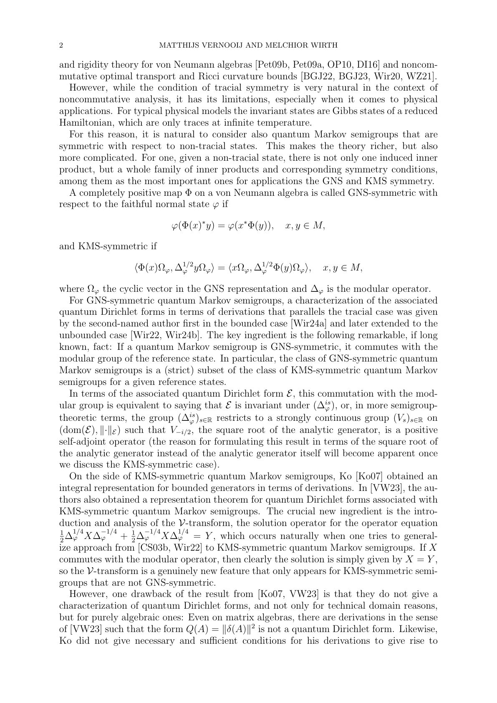
<figcaption class="paper-figure-caption"><b>Fig 1.</b> Low-resolution page preview, page 2</figcaption>
</figure>
<figure class="paper-figure-card">
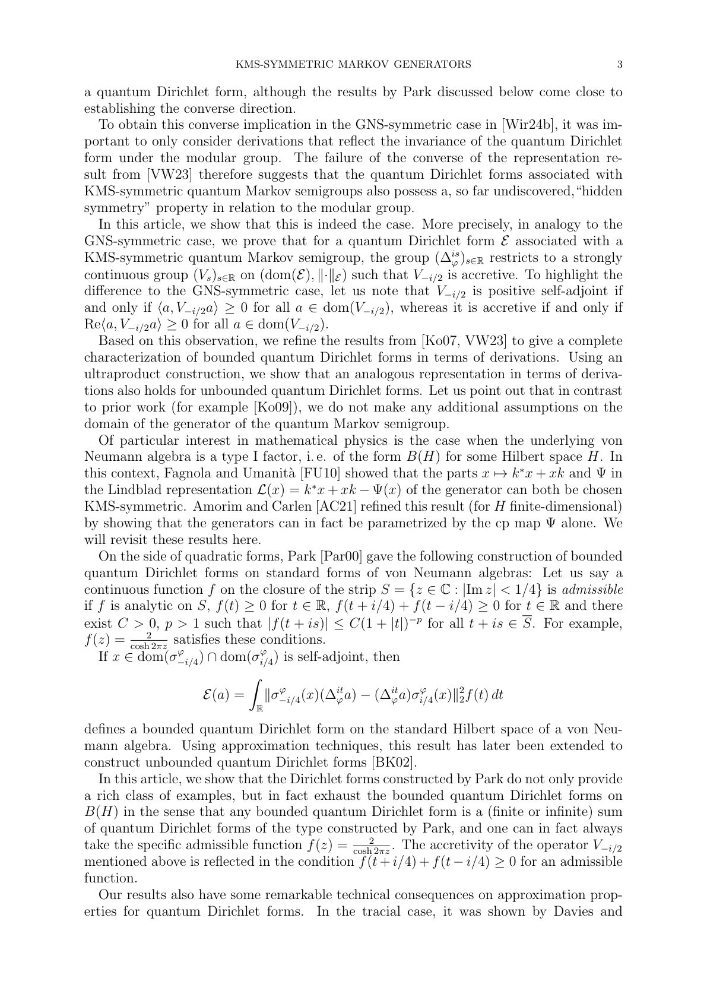
<figcaption class="paper-figure-caption"><b>Fig 2.</b> Low-resolution page preview, page 3</figcaption>
</figure>
<figure class="paper-figure-card">
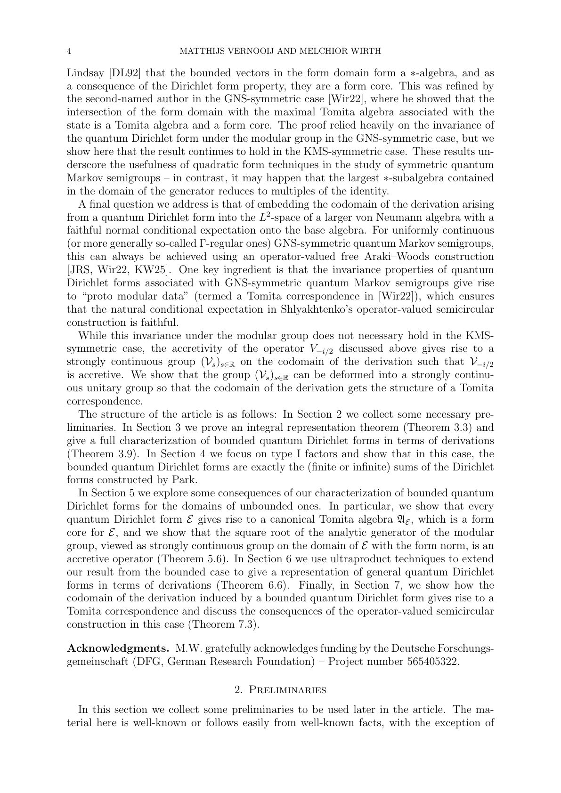
<figcaption class="paper-figure-caption"><b>Fig 3.</b> Low-resolution page preview, page 4</figcaption>
</figure>
<figure class="paper-figure-card">
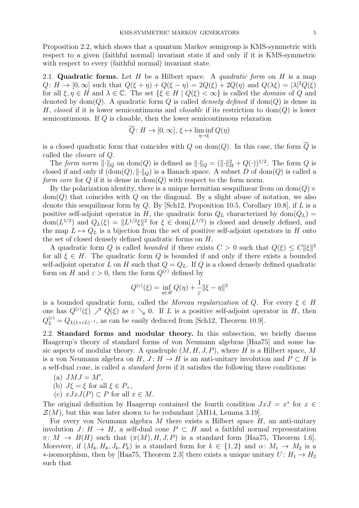
<figcaption class="paper-figure-caption"><b>Fig 4.</b> Low-resolution page preview, page 5</figcaption>
</figure>
<figure class="paper-figure-card">
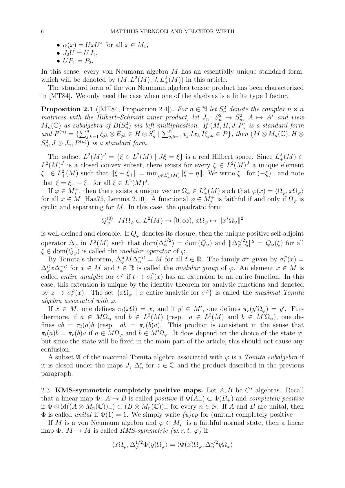
<figcaption class="paper-figure-caption"><b>Fig 5.</b> Low-resolution page preview, page 6</figcaption>
</figure>
</div>

<p><strong>Summary.</strong> This paper rigorously characterizes quantum Dirichlet forms arising from KMS-symmetric quantum Markov semigroups. It achieves this by showing that these forms are completely determined by derivations and by establishing a deep connection between the semigroup's dynamics and the algebraic structure of a Tomita correspondence. This provides a powerful mathematical tool for analyzing open quantum systems at thermal equilibrium.</p>
<p><strong>Why it may be interesting.</strong> This work provides deep structural insights into the mathematical foundations of open quantum systems dynamics, linking thermal equilibrium conditions (KMS) to rigorous algebraic structures (Dirichlet forms and Tomita correspondences).</p>
<details>
<summary>Detailed structure</summary>
<p><strong>Main problem.</strong> The paper aims to provide a complete mathematical characterization of quantum Dirichlet forms associated with KMS-symmetric quantum Markov semigroups.</p>
<p><strong>Main result.</strong> It establishes that these quantum Dirichlet forms can be completely characterized in terms of derivations, and it shows that the associated structure leads to a Tomita correspondence.</p>
<p><strong>Method.</strong> The authors employ advanced techniques from operator algebras, including the use of the GNS Hilbert space, modular groups, and quadratic form theory to relate the semigroup structure to derivations.</p>
<p><strong>Model / system.</strong> The study concerns open quantum systems whose time evolution is modeled by quantum Markov semigroups exhibiting KMS-symmetry. The mathematical framework involves von Neumann algebras and their associated quadratic forms.</p>
<p><strong>Key observables.</strong> Quantum Dirichlet forms, the generator of the semigroup, and the associated Tomita correspondence structure.</p>
<p><strong>Important parameters / regimes.</strong> The symmetry condition (KMS-symmetry) and the accretivity of the square root of the analytic generator with respect to the form norm.</p>
<p><strong>Assumptions / limitations.</strong> The analysis builds upon the existence of a reference state $\varphi$ and the assumption of KMS-symmetry, which refines the standard GNS-symmetry conditions.</p>
<p><strong>Paper structure.</strong> The paper progresses by first characterizing bounded quantum Dirichlet forms via derivations, then extending this characterization to unbounded forms using ultraproduct constructions, and finally relating the resulting structure to a Tomita correspondence via deformation arguments.</p>
</details>
<details>
<summary>Abstract</summary>
<p>A KMS-symmetric quantum Markov semigroup is completely determined by the quadratic form in induces on the GNS Hilbert space. The quadratic forms that arise in this way are called quantum Dirichlet forms. In this article we give a complete description of bounded quantum Dirichlet forms in terms of derivations. In particular, we exhibit an explicit characterization of the bounded quantum Dirichlet forms on type I factors. We also show that any unbounded quantum Dirichlet form can be represented in terms of derivations. The key technical insight is that the modular group always restricts to a strongly continuous group on the domain of a quantum Dirichlet form such that the square root of the analytic generator is accretive with respect to the form norm.</p>
</details>
<p><sub><a href="#top">↑ back to top</a></sub></p>

<p><a id="paper-2610.10239"></a></p>
<h3 id="protocolmatch-protocol-dependent-model-selection-for-scientific-dynamics-forecasting"><a href="http://arxiv.org/abs/2610.10239v1">ProtocolMatch: Protocol-Dependent Model Selection for Scientific Dynamics Forecasting</a></h3>
<p><strong>Authors:</strong> Lu Wei, Yufeng Wang, Haibin Ling<br>
<strong>Type:</strong> both · <strong>Category:</strong> other · <strong>PDF:</strong> <a href="https://arxiv.org/pdf/2610.10239v1">https://arxiv.org/pdf/2610.10239v1</a><br>
<strong>Analysis basis:</strong> full PDF text, analyzed in chunks
<strong>Topic relevance:</strong> <code>analog quantum simulation</code> <strong>3/5</strong> · <code>methods for driven-dissipative</code> <strong>3/5</strong> · <code>driven-dissipative phase transition</code> <strong>2/5</strong> · <code>Keldysh / 2PI / non-Gaussian methods</code> <strong>1/5</strong> · <code>correlated / nonlocal dissipation</code> <strong>1/5</strong> · <code>non-equilibrium universality</code> <strong>1/5</strong> · <code>quantum measurements</code> <strong>1/5</strong></p>
<div class="figure-strip-hint">↔ Scroll figures horizontally</div>
<div class="paper-figures-scroll">
<figure class="paper-figure-card">
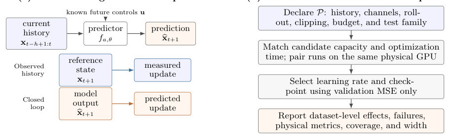
<figcaption class="paper-figure-caption"><b>Fig 1.</b> Figure 1: The forecasting protocol determines both the information available to a predictor and how that predictor is compared. (a) Observed-history and closed-loop evaluation keep the predictor, future controls, and target fixed; only the source of the next state-history window changes. (b) ProtocolMatch pairs that declared task with controlled candidates, validation-only selection, independent-dataset aggregation, and failure-preserving reliability reports.</figcaption>
</figure>
<figure class="paper-figure-card">
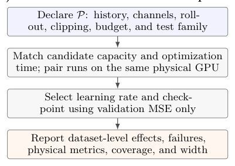
<figcaption class="paper-figure-caption"><b>Fig 2.</b> Figure 1(b) summarizes the comparison workflow. Four controls make the resulting rank interpretable.</figcaption>
</figure>
<figure class="paper-figure-card">
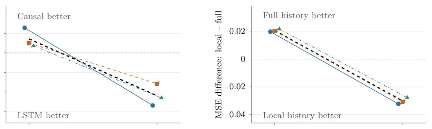
<figcaption class="paper-figure-caption"><b>Fig 3.</b> Figure 2: Replicated ranking reversals under matched optimization time. (a) LSTM-minus-causal error for closed-loop extrapolation changes sign between 64 and 256 training trajectories. (b) Local-minus-full-history error changes sign between observed-history and closed-loop rollout while the full prediction target remains fixed. Colored lines are independent-dataset means over three training seeds; the dashed black line is their average. Both panels use 20-step histories, a 120-second budget, identity-distribution tests, and no output clipping.</figcaption>
</figure>
<figure class="paper-figure-card">
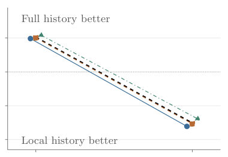
<figcaption class="paper-figure-caption"><b>Fig 4.</b> Figure 2(b) defines the input contrast as local-minus- full MSE. For the history-20 LSTM, it is +0.02046 with observed-history refresh and −0.03023 with closed-loop feedback. Each independent dataset shows the same sign change. The benefit of nonlocal history therefore depends on whether those channels are refreshed from observations or populated by preceding predictions.</figcaption>
</figure>
<figure class="paper-figure-card">
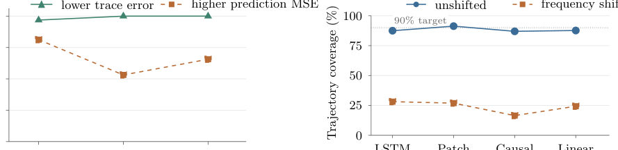
<figcaption class="paper-figure-caption"><b>Fig 5.</b> Figure 3: Accuracy, physical validity, and uncertainty are distinct outcomes. (a) A trace penalty usually lowers trace error but often raises prediction MSE for a two-spin LSTM; the 32 correlated views share fitted models. (b) Intervals calibrated on 64 independent identity-distribution trajectories approach nominal 90% coverage in distribution but lose most coverage after a frequency shift. Widths are full symmetric interval widths.</figcaption>
</figure>
</div>

<p><strong>Summary.</strong> This paper addresses the challenge of model selection in quantum dynamics forecasting by proposing ProtocolMatch, a framework that evaluates models based on the entire operational protocol, not just the architecture. By testing on driven quantum-spin systems, the authors show that model performance is highly protocol-dependent, necessitating that any reported predictor must be accompanied by its specific operational context and separate reliability metrics.</p>
<p><strong>Why it may be interesting.</strong> This work provides a rigorous, machine-learning-informed methodology for assessing the reliability of quantum dynamics models, which is crucial for building trustworthy simulations of open quantum systems.</p>
<details>
<summary>Detailed structure</summary>
<p><strong>Main problem.</strong> Scientific dynamics forecasting requires model selection that accounts for the entire 'protocol'—including observation history, rollout rules, and physical constraints—rather than just the model architecture.</p>
<p><strong>Main result.</strong> The optimal forecasting model depends critically on the specific protocol used, as demonstrated by performance reversals when changing data size, history length, or evaluation loop (observed vs. closed-loop).</p>
<p><strong>Method.</strong> The authors introduce ProtocolMatch, a framework that evaluates model candidates by explicitly conditioning the risk calculation on the entire forecasting protocol $P$, separating accuracy, physical validity, and shifted-distribution reliability.</p>
<p><strong>Model / system.</strong> The study applies this framework to driven quantum-spin dynamics, simulating systems ranging from two-spin to six-spin quantum chains governed by Hamiltonians like the transverse-field Ising model.</p>
<p><strong>Key observables.</strong> Mean Squared Error (MSE) for prediction error, physical consistency (e.g., trace normalization, positivity), and interval coverage under shifted distributions.</p>
<p><strong>Important parameters / regimes.</strong> History length (1, 5, 20), rollout rule (Observed-history vs. Closed-loop), and the specific protocol tuple $P$ defining the evaluation regime.</p>
<p><strong>Assumptions / limitations.</strong> The primary assumption is that the protocol cannot be treated as a nuisance variable; changes in performance across protocols indicate fundamentally different deployment behaviors.</p>
<p><strong>Figures summary.</strong> Figures illustrate the comparison between observed-history and closed-loop evaluations, and show how the preferred model architecture reverses when varying training data size or rollout rules.</p>
<p><strong>Paper structure.</strong> The paper first establishes the limitations of architecture-only model selection, introduces the ProtocolMatch framework to condition model selection on the full protocol $P$, and then empirically tests this framework across various quantum-spin dynamics systems and protocols.</p>
</details>
<details>
<summary>Abstract</summary>
<p>Scientific dynamics forecasting is often framed as an architecture choice, although deployment is also determined by observed history, rollout feedback, compute budget, physical objective, and test distribution. We formulate protocol-dependent model selection and introduce ProtocolMatch, a compute-matched, validation-selected, and failure-preserving evaluation framework. On driven quantum-spin dynamics, we compare recurrent, patched-attention, causal-attention, and low-rank linear predictors across three independently generated datasets. The causal-attention--recurrence ordering reverses as the training set grows within a fixed two-spin task, while a linear predictor has the lowest mean error in the six-spin local-observable comparison. Restricting observed history worsens every refreshed-history view but improves every closed-loop view in the four-spin study. A latest-state MLP has lower error than persistence on every dataset under state refresh across all five cells, yet its closed-loop rank varies by system and includes finite explosive errors. Physical penalties improve targeted consistency without reliably improving prediction error, and in-distribution intervals lose most coverage after a driving-frequency shift. Thus scientific model selection should return a predictor with its protocol and report accuracy, physical validity, and shifted-distribution reliability separately.</p>
</details>
<p><sub><a href="#top">↑ back to top</a></sub></p>

<p><a id="paper-2610.10053"></a></p>
<h3 id="on-bonarts-interpretation-of-the-square-root-impact-law"><a href="http://arxiv.org/abs/2610.10053v1">On Bonart's interpretation of the Square-Root Impact Law</a></h3>
<p><strong>Authors:</strong> J. -P. Bouchaud, I. Mastromatteo, B. Toth<br>
<strong>Type:</strong> theory · <strong>Category:</strong> statistical mechanics · <strong>PDF:</strong> <a href="https://arxiv.org/pdf/2610.10053v1">https://arxiv.org/pdf/2610.10053v1</a><br>
<strong>Analysis basis:</strong> full PDF text, analyzed in chunks
<strong>Topic relevance:</strong> <code>non-equilibrium universality</code> <strong>3/5</strong> · <code>Keldysh / 2PI / non-Gaussian methods</code> <strong>2/5</strong> · <code>methods for driven-dissipative</code> <strong>2/5</strong> · <code>analog quantum simulation</code> <strong>1/5</strong> · <code>correlated / nonlocal dissipation</code> <strong>1/5</strong> · <code>driven-dissipative phase transition</code> <strong>1/5</strong> · <code>quantum measurements</code> <strong>1/5</strong></p>
<div class="figure-strip-hint">↔ Scroll figures horizontally</div>
<div class="paper-figures-scroll">
<figure class="paper-figure-card">
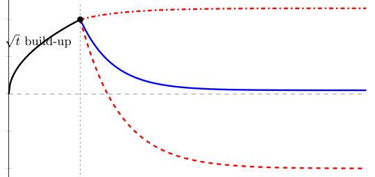
<figcaption class="paper-figure-caption"><b>Fig 1.</b> Figure 1: Two poles of post-execution impact decay; the impact at the end of execution (the peak of the build-up, dot) is normalised to 1, and all curves share the concave √</figcaption>
</figure>
</div>

<p><strong>Summary.</strong> This paper analyzes the theoretical underpinnings of the Square-Root Impact Law (SRIL) in financial markets. It argues that the law's consistency requires a specific scaling exponent ($\delta=1/2$) derived from volume conservation, suggesting the law stems from equating mean impact to standard deviation. The work highlights the tension between theoretical assumptions (like stream whitening) and observed market behavior.</p>
<p><strong>Why it may be interesting.</strong> While applied to finance, the rigorous mathematical techniques used—analyzing scaling laws, variance budgets, and the failure of simple diffusive assumptions—are highly relevant to non-equilibrium statistical mechanics and open quantum systems.</p>
<details>
<summary>Detailed structure</summary>
<p><strong>Main problem.</strong> The paper seeks to reconcile the empirical Square-Root Impact Law (SRIL) in financial markets with a consistent theoretical mechanism derived from market microstructure physics.</p>
<p><strong>Main result.</strong> A volume-conservation argument strongly selects the exponent $\delta=1/2$ for the impact law, suggesting the SRIL arises from a mean-equals-standard-deviation identification rather than purely diffusive processes.</p>
<p><strong>Method.</strong> The authors use mathematical derivations based on variance budgets, conservation laws, and comparing theoretical models (like the Lillo–Mike–Farmer model) against the required scaling behavior.</p>
<p><strong>Model / system.</strong> The system is a financial market microstructure, modeling the price impact ($I$) of metaorders ($Q$) relative to total volume ($V$) and volatility ($\sigma$). The analysis involves decomposing returns into background and impact components.</p>
<p><strong>Key observables.</strong> Price impact ($I$), traded volume ($Q$), daily volatility ($\sigma$), and the participation rate ($\varphi$).</p>
<p><strong>Important parameters / regimes.</strong> The exponent $\delta$ governing the power-law dependence of impact on volume, and the participation rate $\varphi$.</p>
<p><strong>Assumptions / limitations.</strong> The core assumptions involve the market whitening the <em>stream</em> of metaorders, and the analysis relies on volume-conservation arguments to constrain the scaling exponent $\delta$.</p>
<p><strong>Figures summary.</strong> Not specified.</p>
<p><strong>Paper structure.</strong> The paper progresses by first establishing the empirical requirements of the SRIL, then reviewing and simplifying Bonart's whitening argument, and finally using volume-conservation and scaling analysis to derive the necessary exponent $\delta=1/2$.</p>
</details>
<details>
<summary>Abstract</summary>
<p>The square-root impact law (SRIL), $I = Yσ\sqrt{Q/V}$, bundles two facts that a single mechanism must explain at once: a shape (impact proportional to square-root of traded volume $Q$) and an amplitude ($Y=O(1)$, independent of the participation rate $\varphi$). Bonart has recently proposed an elegant solution: if realized and counterfactual prices are both diffusive, information-neutral impact must have white increments and the SRIL follows without the wart. We reformulate and simplify his argument, and foreground the ingredient he himself regards as essential --- that the market whitens the stationary stream of each participant's metaorders, not any isolated one. The Lillo--Mike--Farmer model satisfies his premises, yet gives an isolated metaorder the super-square-root impact $\varphi^{(1-γ)/2}Q^{(1+γ)/2}$, $γ\in(0,1)$, because single metaorders (i.e. not part of a stream) are statistically invisible and thus priced mechanically. We then construct an explicit multi-agent propagator that realizes Bonart's whitening, and show it reproduces the clean SRIL precisely when the market can attribute trades to their issuer. But correct re-attribution of anonymous trades is a formidable task, which requires markets to behave as implausibly efficient signal processing machines. The stream hypothesis makes a sharp, falsifiable prediction --- isolated metaorders, well separated in time, should not obey the SRIL --- that does not seem agree with empirical data known to us. Independently, a volume-conservation argument singles out the square-root law and lays bare the step the diffusivity route must assume: diffusivity fixes the variance of impact --- an additive, stationary, age-blind quantity --- whereas the SRIL is a law for the mean impact, which marginally decays as $1/\sqrt{\text{age}}$ and therefore demands an origin of time.</p>
</details>
<p><sub><a href="#top">↑ back to top</a></sub></p>

<p><a id="paper-2610.09047"></a></p>
<h3 id="heating-and-escape-of-confined-atoms-subject-to-colored-noise"><a href="http://arxiv.org/abs/2610.09047v1">Heating and Escape of Confined Atoms Subject to Colored Noise</a></h3>
<p><strong>Authors:</strong> Joseph M. Ryan, Katherine Jonas, Christopher Monroe<br>
<strong>Type:</strong> both · <strong>Category:</strong> other · <strong>PDF:</strong> <a href="https://arxiv.org/pdf/2610.09047v1">https://arxiv.org/pdf/2610.09047v1</a><br>
<strong>Analysis basis:</strong> full PDF text, analyzed in chunks
<strong>Topic relevance:</strong> <code>methods for driven-dissipative</code> <strong>3/5</strong> · <code>Keldysh / 2PI / non-Gaussian methods</code> <strong>1/5</strong> · <code>analog quantum simulation</code> <strong>1/5</strong> · <code>correlated / nonlocal dissipation</code> <strong>1/5</strong> · <code>driven-dissipative phase transition</code> <strong>1/5</strong> · <code>non-equilibrium universality</code> <strong>1/5</strong> · <code>quantum measurements</code> <strong>1/5</strong></p>
<div class="figure-strip-hint">↔ Scroll figures horizontally</div>
<div class="paper-figures-scroll">
<figure class="paper-figure-card">
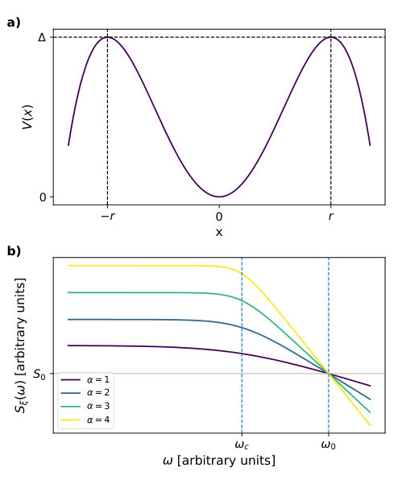
<figcaption class="paper-figure-caption"><b>Fig 1.</b> Figure 1. (a) Potential V (x) from Eq. (3). (b) Power spectral density Sξ(ω) in the form of Eq. (5), with low-frequency cutoff ωc. Note that for different values of α, we normalize the PSDs such that they all have the same value S0 = Sξ(ω0). With this normalization choice, ˙Ecold is identical for all values of α.</figcaption>
</figure>
<figure class="paper-figure-card">
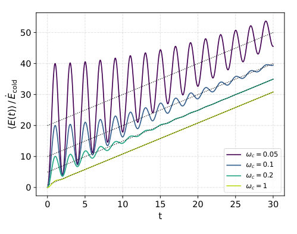
<figcaption class="paper-figure-caption"><b>Fig 2.</b> Figure 2. Mean energy of a harmonic oscillator with ω0 = π driven by O-U noise evaluated using Eq. (9) and normalized by the cold heating rate ˙Ecold. We show different values of the low-frequency cutoff ωc. All four curves approach unit slope at long times, as required by Eq. (2). Dotted lines show the asymptote Eq. (10). Transient oscillations persist for a duration ∼1/ωc and smaller ωc raises the intercept Eoffset.</figcaption>
</figure>
<figure class="paper-figure-card">
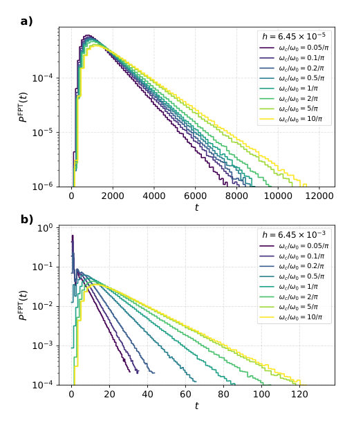
<figcaption class="paper-figure-caption"><b>Fig 3.</b> Figure 3. P FPT of the O-U-driven finite-depth oscilla- tor Eq. (4) with m = 1 for (a) h = 6.45 × 10−5, where χ = 0.02–0.18 for the cutoffs shown. Here, changing ωc has minimal effect on the shape of P FPT; and (b) h = 6.45×10−3, where χ = 0.19–1.8 for the cutoffs shown. There, one can see that changing ωc not only strongly modifies the long-time ex- ponential tail of P FPT, but there is also a qualitative change in the short-time behavior.</figcaption>
</figure>
<figure class="paper-figure-card">

<figcaption class="paper-figure-caption"><b>Fig 4.</b> Figure 4. Escape statistics of the O-U-driven finite-depth os- cillator with m = 1, ω0 = π, and Sξ(ω0) = 2, for various cut- offs ωc/ω0. (a) Ratio of the mean to the median first-passage time, T1/TM. (b) Normalized escape time τesc. Points con- nected by solid lines are simulations. Triangles mark the weak-noise prediction Eq. (32), which is independent of h and is drawn to the left of the simulated range. Dashed lines include the quasi-static correction Eq. (19). They follow the simulations where χ ≪1 and ωc ≪ω0 and depart from them outside this range. Error bars are 1σ sampling errors and are mostly smaller than the markers. Simulations sweep h by varying ∆.</figcaption>
</figure>
<figure class="paper-figure-card">

<figcaption class="paper-figure-caption"><b>Fig 5.</b> Figure 5. Normalized escape time τesc = ˙Ecold/ ˙Eesc for the finite-depth oscillator of Eq. (4) with h = 6.45×10−6, driven by power-law noise with low-frequency cutoff ωc and fixed S0 = 2, so that ˙Ecold = 1 throughout. Filled circles are Monte Carlo first-passage times using the O-U superposi- tion of Appendix C. Solid curves are the action-angle pre- diction Eq. (32) evaluated with the exact spectrum of the N = 20 superposition. Dashed curves are the same predic- tion for the idealized spectrum Eq. (5). Both are independent of h. Open diamonds are single O-U processes, whose spec- trum is exactly Eq. (5) with α = 2. They have χ = 0.057, 0.040, and 0.028 for ωc/ω0 = 0.05/π, 0.1/π, and...</figcaption>
</figure>
</div>

<p><strong>Summary.</strong> This paper analyzes how atoms trapped in a potential escape due to colored noise, modeling the dynamics using a Langevin equation. The authors derive theoretical expressions for the escape time, showing that while noise color is important, stray fields causing quasi-static barrier tilting can dominate the escape rate. The findings are highly relevant for interpreting experimental lifetime measurements in trapped-ion quantum systems.</p>
<p><strong>Why it may be interesting.</strong> This work provides crucial theoretical tools for understanding noise-induced escape dynamics in trapped-ion and cold-atom systems, highlighting the importance of non-Markovian noise effects and external field perturbations beyond simple spectral analysis.</p>
<details>
<summary>Detailed structure</summary>
<p><strong>Main problem.</strong> The paper investigates the heating and subsequent escape of atoms confined in a finite-depth potential when subjected to colored noise.</p>
<p><strong>Main result.</strong> The escape rate is not solely determined by the spectral color of the noise; quasi-static barrier tilting caused by stray fields of plausible magnitude can significantly accelerate the escape process.</p>
<p><strong>Method.</strong> The authors employ stochastic averaging techniques, comparing analytical derivations (like those from action-angle variables) with full Monte Carlo simulations of the Langevin equation.</p>
<p><strong>Model / system.</strong> The system models the motion of an atom in a confining potential, such as those found in electromagnetically trapped ions or atoms. The dynamics are governed by a Langevin equation driven by a colored noise force with a power-law spectral density.</p>
<p><strong>Key observables.</strong> Mean escape time ($T_1$), escape rate ($\dot{E}_{	ext{esc}}$), linear heating rate ($\dot{E}_{	ext{cold}}$), and the first-passage-time distribution ($P_{	ext{FPT}}(t)$).</p>
<p><strong>Important parameters / regimes.</strong> The ratio $ au_{    ext{esc}} = \dot{E}<em ext_esc="ext{esc">{   ext{cold}} / \dot{E}</em>$ is key, alongside dimensionless parameters like $\omega_c/\omega_0$ and the barrier tilting parameter $\chi$.}</p>
<p><strong>Assumptions / limitations.</strong> The analysis relies on approximations such as the weak-noise regime ($\chi \ll 1$ and $h \ll 1$) and the use of amplitude-phase or action-angle averaging techniques.</p>
<p><strong>Figures summary.</strong> Figures illustrate the confining potential and the noise PSD, and compare escape times calculated using different averaging methods (action-angle vs. amplitude-phase) and show the dynamics for different initial preparation states (released vs. cooled).</p>
<p><strong>Paper structure.</strong> The paper progresses from defining the physical model and key observables, developing weak-noise theories using stochastic averaging, comparing different averaging methods, and finally applying the results to interpret experimental measurements from ion traps.</p>
</details>
<details>
<summary>Abstract</summary>
<p>The motion of a particle in a finite-depth confining potential, such as that of an electromagnetically trapped atom or ion, is approximately harmonic at low energy and softens as the escape energy is approached. When the particle is driven by a stochastic force, the heating and escape times depend sensitively on the noise power spectrum. We study escape times of particles in softening potentials driven by power-law colored noise. We identify two nested conditions for weak noise: the particle must execute many oscillations before escape, and noise forces must be small relative to forces exerted by the trap so as not to tilt the potential appreciably. In this regime, we derive expressions for the mean escape time using stochastic averaging techniques and compare them with Monte Carlo simulations of the full equations of motion. We also examine the crossover to regimes where these conditions are not met and large quasi-static forces give rise to additional escape mechanisms. Applying these results to an experimental measurement of lifetimes in a microfabricated ion trap, we find that spectral color alone cannot account for the rapid escape rates observed, whereas quasi-static barrier tilting by a stray field of plausible magnitude could. These results are relevant to the heating and escape of trapped atoms due to noisy force fields, as well as to other nonlinear oscillators subject to colored noise.</p>
</details>
<p><sub><a href="#top">↑ back to top</a></sub></p>

<p><a id="paper-2610.09073"></a></p>
<h3 id="interaction-assisted-spin-coherence-in-a-multimode-trapped-atomic-ensemble"><a href="http://arxiv.org/abs/2610.09073v1">Interaction-Assisted Spin Coherence in a Multimode Trapped Atomic Ensemble</a></h3>
<p><strong>Authors:</strong> Aleksandre Merabishvili, Ebubechukwu O. Ilo-Okeke<br>
<strong>Type:</strong> theory · <strong>Category:</strong> other · <strong>PDF:</strong> <a href="https://arxiv.org/pdf/2610.09073v1">https://arxiv.org/pdf/2610.09073v1</a><br>
<strong>Analysis basis:</strong> full PDF text, analyzed in chunks
<strong>Topic relevance:</strong> <code>analog quantum simulation</code> <strong>3/5</strong> · <code>Keldysh / 2PI / non-Gaussian methods</code> <strong>2/5</strong> · <code>methods for driven-dissipative</code> <strong>2/5</strong> · <code>correlated / nonlocal dissipation</code> <strong>1/5</strong> · <code>quantum measurements</code> <strong>1/5</strong></p>
<div class="figure-strip-hint">↔ Scroll figures horizontally</div>
<div class="paper-figures-scroll">
<figure class="paper-figure-card">

<figcaption class="paper-figure-caption"><b>Fig 1.</b> FIG. 1. Conceptual picture of interaction-assisted spin coherence in a thermally occupied multimode trapped ensemble. (a) The weak-axis-resolved description retains the axial harmonic-oscillator modes explicitly, while the transverse (x, y) degrees of freedom are incorporated through thermal averaging. Near the magic magnetic field, the residual differential shift is quartic in the axial coordinate, giving the occupied axial modes different detunings; each mode carries a collective pseudospin. (b) In the weak-exchange regime, initially aligned mode spins precess at different rates because of their mode-dependent detunings. The resulting coherent phase mixing increases their angular spread...</figcaption>
</figure>
<figure class="paper-figure-card">

<figcaption class="paper-figure-caption"><b>Fig 2.</b> FIG. 2. Comparison between the discrete-mode numerical contrast and the continuum analytic asymptote. Solid curves show the numerically evaluated contrast C(τ) (42), while dashed curves show the analytic approximation (44), plot- ted only in its asymptotic regime τ ≳2τmix. Panel (a) shows the small-η high-temperature regime, and (b) zooms into the low-contrast regime of (a). Panel (c) shows the intermediate temperature regime. All parameters are as shown in the fig- ure.</figcaption>
</figure>
<figure class="paper-figure-card">

<figcaption class="paper-figure-caption"><b>Fig 3.</b> FIG. 3. Representative Ramsey-contrast dynamics for two temperatures. The Ramsey contrast C(s), with s = τ/τc, is shown for η = 0.008 and η = 0.04 at several values of Λ (57). The dotted vertical line at s = 2 marks the beginning of the late-time averaging window used to define ¯Clate.</figcaption>
</figure>
<figure class="paper-figure-card">

<figcaption class="paper-figure-caption"><b>Fig 4.</b> FIG. 5. Scaling collapse of the late-time contrast. The late- time contrasts ¯Clate versus exchange-to-inhomogeneity ratio Λ (57) at different temperatures follow a common trend.</figcaption>
</figure>
<figure class="paper-figure-card">

<figcaption class="paper-figure-caption"><b>Fig 5.</b> FIG. 4. Late-time contrast landscape. The color scale shows ¯Clate(η, g0), obtained by averaging C(s) over the late-time win- dow. The dashed line marks Λ = 1, corresponding to the point where the collective exchange scale becomes compara- ble to the analytic thermal inhomogeneous-broadening scale.</figcaption>
</figure>
</div>

<p><strong>Summary.</strong> This paper analyzes how collective spin coherence in trapped atoms is lost due to inhomogeneous detunings across multiple motional modes. It shows that particle interactions generate a self-correcting field that partially restores the coherence. Crucially, it quantifies that while interactions can refocus coherent phase errors, they cannot overcome irreversible environmental noise.</p>
<p><strong>Why it may be interesting.</strong> This work provides a detailed theoretical framework for understanding coherence preservation in complex, inhomogeneous quantum systems, directly relevant to quantum sensing using trapped atoms.</p>
<details>
<summary>Detailed structure</summary>
<p><strong>Main problem.</strong> The paper investigates how collective spin coherence in a multimode trapped atomic ensemble is degraded by inhomogeneous phase evolution due to thermal occupation, and how atomic interactions can restore this coherence.</p>
<p><strong>Main result.</strong> Interactions generate a self-consistent restoring field that counteracts phase dispersion, leading to a measurable recovery of the Ramsey contrast, though this recovery is ultimately limited by irreversible pure dephasing noise.</p>
<p><strong>Method.</strong> The authors develop a weak-axis-resolved Hamiltonian theory, employing mean-field approximations and analyzing the dynamics in the continuum limit for high temperatures.</p>
<p><strong>Model / system.</strong> The system is a gas of neutral atoms with two internal pseudospin states confined in a harmonic trap, modeled by an effective spin Hamiltonian incorporating mode-dependent detunings and overlap-dependent exchange interactions.</p>
<p><strong>Key observables.</strong> Collective transverse spin (Ramsey-fringe contrast), the decay envelope of the Ramsey contrast, and the ratio $\Lambda$ comparing exchange scale to detuning spread.</p>
<p><strong>Important parameters / regimes.</strong> The dimensionless control parameter $\Lambda$, the temperature parameter $\eta$, and the pure dephasing rate $\gamma_{\perp}$.</p>
<p><strong>Assumptions / limitations.</strong> The analysis relies on a weak-axis-resolved description, thermally averaging transverse degrees of freedom, and distinguishing between coherent phase mixing and irreversible noise.</p>
<p><strong>Figures summary.</strong> Figures conceptually illustrate the competition between mode-dependent detunings and exchange-assisted rephasing, and later show the robustness of the recovered contrast against varying levels of pure dephasing.</p>
<p><strong>Paper structure.</strong> The paper progresses from establishing the non-interacting, phase-mixing baseline, to deriving the full interaction Hamiltonian, analyzing the mean-field dynamics, and finally quantifying the crossover between coherent rephasing and irreversible decoherence.</p>
</details>
<details>
<summary>Abstract</summary>
<p>In a thermally occupied multimode trapped ensemble, mode-dependent detunings can strongly suppress Ramsey contrast even when the underlying dynamics remains coherent. We develop a weak-axis-resolved Hamiltonian theory in which collective mode spins experience longitudinal detunings and overlap-dependent exchange interactions. Without exchange, the distribution of detunings across thermally occupied modes produces coherent phase mixing and an algebraically decaying Ramsey-contrast envelope in the many-mode continuum regime. At the mean-field level, exchange generates a self-consistent restoring field that reduces phase dispersion and restores collective contrast. The crossover is governed by the competition between the collective exchange scale and the thermally induced detuning spread: when the late-time contrast is expressed in terms of their ratio, results at different temperatures collapse onto a common trend, and the crossover coupling follows the predicted inverse-square thermal scaling, with a numerical exponent of 2.06. Weak irreversible pure dephasing limits, but does not eliminate, this recovery, demonstrating that exchange refocuses coherent inhomogeneous phase mixing but cannot reverse irreversible phase noise.</p>
</details>
<p><sub><a href="#top">↑ back to top</a></sub></p>

<p><a id="paper-2610.10504"></a></p>
<h3 id="black-hole-radial-geometry-from-a-quantum-spin-chain"><a href="http://arxiv.org/abs/2610.10504v1">Black hole radial geometry from a quantum spin chain</a></h3>
<p><strong>Authors:</strong> Boris A. Khanikati<br>
<strong>Type:</strong> both · <strong>Category:</strong> other · <strong>PDF:</strong> <a href="https://arxiv.org/pdf/2610.10504v1">https://arxiv.org/pdf/2610.10504v1</a><br>
<strong>Analysis basis:</strong> full PDF text, analyzed in chunks
<strong>Topic relevance:</strong> <code>QC/QI experiment</code> <strong>3/5</strong> · <code>analog quantum simulation</code> <strong>3/5</strong> · <code>methods for driven-dissipative</code> <strong>2/5</strong></p>
<div class="figure-strip-hint">↔ Scroll figures horizontally</div>
<div class="paper-figures-scroll">
<figure class="paper-figure-card">

<figcaption class="paper-figure-caption"><b>Fig 1.</b> FIG. 1. Schematic representation of the dictionary between the black brane geometry and the spin chain. The dimensionless radial coordinate w runs from the d-dimensional boundary (w = 0) to the horizon (w = 1), with w &gt; 1 corresponding to the black hole interior. In the asymptotic regime, the radial coordinate is mapped onto the spin-chain quasimomentum. Real q ∈(0, π) describes the black brane bulk, whereas its analytic continuation, q = iκ with κ &gt; 0, describes the black hole interior.</figcaption>
</figure>
</div>

<p><strong>Summary.</strong> This work demonstrates a profound connection between gravity in Anti-de Sitter space and quantum many-body physics by encoding the radial geometry into a solvable spin chain model. By simulating this chain on a quantum processor, the authors successfully extract gravitational observables, such as the time to the black hole singularity, validating the holographic principle in a quantum computing setting.</p>
<p><strong>Why it may be interesting.</strong> It provides a concrete, experimentally verifiable realization of the AdS/CFT correspondence, linking bulk gravity dynamics (black holes) directly to measurable quantum many-body physics on superconducting qubits.</p>
<details>
<summary>Detailed structure</summary>
<p><strong>Main problem.</strong> The paper establishes a dictionary showing how the radial differential equation for a scalar field in an AdS black brane background can be mapped onto an exactly solvable semi-infinite quantum spin chain.</p>
<p><strong>Main result.</strong> The model successfully reproduces key gravitational observables, such as the Breitenlohner-Freedman bound and the proper time to the singularity, using quantum mechanical calculations.</p>
<p><strong>Method.</strong> The authors use spectral analysis, mapping the continuum differential equation to a discrete spin chain Hamiltonian, and employing techniques like analytic continuation and fitting to extract geometric information.</p>
<p><strong>Model / system.</strong> The system is an AdS black brane geometry dual to a scalar field, whose radial dynamics are encoded in a nearest-neighbor, number-conserving spin chain Hamiltonian. This chain is simulated on a superconducting quantum processor.</p>
<p><strong>Key observables.</strong> Screening spectrum, radial coordinate emergence from quasimomentum, thermal one-point function coefficient c(h), and the ratio R(h) used for phase fitting.</p>
<p><strong>Important parameters / regimes.</strong> The dimensionality $d$, the black brane proper radial distance $\ell$, and the ratio $ au_s/R$ (compared to the exact value $\pi/4$).</p>
<p><strong>Assumptions / limitations.</strong> The analysis relies on mapping the continuum problem to a discrete chain, and the final results are subject to finite-size and finite-time simulation errors.</p>
<p><strong>Figures summary.</strong> Figures compare the measured quantum propagator evolution against exact theoretical limits, showing the reconstruction of the coefficient c(h) and the phase fit for the radial time scale $   au_s/R$.</p>
<p><strong>Paper structure.</strong> The paper progresses by first establishing the mapping from the radial equation to the spin chain, then calculating spectral sum rules, and finally using experimental simulation and analytic continuation to reconstruct the geometric observables like the proper time to the singularity.</p>
</details>
<details>
<summary>Abstract</summary>
<p>We show that the radial differential equation for a scalar field in an anti-de Sitter black brane background can be encoded in an exactly solvable semi-infinite spin chain independent of dimensionality. The radial coordinate emerges as lattice quasimomentum. Spin coherence encodes the geometry, while the spectrum and response recover gravitational observables and yield exact screening-mass sum rules. We implement the finite chain on a superconducting processor. At finite filling and low energies, the model yields a conformal field theory in a coordinate proportional to proper radial distance.</p>
</details>
<p><sub><a href="#top">↑ back to top</a></sub></p>

<p><a id="paper-2610.09865"></a></p>
<h3 id="coherent-consensus-for-the-estimation-and-classification-of-phases"><a href="http://arxiv.org/abs/2610.09865v1">Coherent consensus for the estimation and classification of phases</a></h3>
<p><strong>Authors:</strong> Roberto Ruiz, Alessandro Luongo, Sergi Ramos-Calderer, José Ignacio Latorre<br>
<strong>Type:</strong> both · <strong>Category:</strong> quantum information and computing · <strong>PDF:</strong> <a href="https://arxiv.org/pdf/2610.09865v1">https://arxiv.org/pdf/2610.09865v1</a><br>
<strong>Analysis basis:</strong> full PDF text, analyzed in chunks
<strong>Topic relevance:</strong> <code>QC/QI experiment</code> <strong>3/5</strong> · <code>quantum measurements</code> <strong>3/5</strong> · <code>analog quantum simulation</code> <strong>1/5</strong></p>
<div class="figure-strip-hint">↔ Scroll figures horizontally</div>
<div class="paper-figures-scroll">
<figure class="paper-figure-card">

<figcaption class="paper-figure-caption"><b>Fig 1.</b> FIG. 1. Estimated phases via majority voting and coherent consensus with imperfect phase gates on the trapped-ion quantum computer [13]. The left panel contains the results at equal shot budgets, while the right panel shows outcomes at equal resource budgets, quantified as hardware quantum credits (HQCs) [14]. The dashed line corresponds to the target ϕ = 10−2. The markers represent the estimates bϕ, and the error bars represent the statistical error at 95% due to shot noise. Each imperfect phase gate carries an angle ϕj, drawn uniformly from a band of half-width a = 5 × 10−3 around ϕ. The gray shaded area represents the range, narrowing as n grows, within which the theoretical bias of the...</figcaption>
</figure>
<figure class="paper-figure-card">

<figcaption class="paper-figure-caption"><b>Fig 2.</b> FIG. 3. Estimated phases from the noiseless simulations of majority voting and coherent consensus circuits (Figs. 2a and 2b), against the number of qubits (left, m = 2 000) and against the number of shots (right, n = 20). The dashed line corresponds to the target ϕ = 10−2. Colored shaded bands represent the statistical error at 95% confidence. Perturbations γj are drawn from U(−a, a) with a = 5 × 10−3. The gray shaded band represents the range of the theoretical bias at 95% confidence. The absence of device noise is reflected in the lack of systematic bias, so that both estimators are accurate up to the theoretical bias. The confidence interval of coherent consensus is narrower than that of...</figcaption>
</figure>
<figure class="paper-figure-card">

<figcaption class="paper-figure-caption"><b>Fig 3.</b> FIG. 4. Relative errors from the simulations of majority voting and coherent consensus circuits (Figs. 2a and 2b), against the number of qubits (left, m = 104) and against the number of shots (right, n = 250). The guide lines show the expected statistical-error scaling ∝n−1/2 for majority voting and ∝n−1 for coherent consensus (left), and ∝m−1/2 for both majority voting and coherent consensus (right). The dashed line corresponds to the reference value ϵ = 5%. The target is scaled from ϕ = 10−2 to ϕ = 10−3. Perturbations are correspondingly scaled such that γj are drawn from U(−a, a) with a = 5×10−4. This scaling allows us to span n = 10, . . . , 1 000 while preserving nϕ &lt; π/2, as required...</figcaption>
</figure>
<figure class="paper-figure-card">

<figcaption class="paper-figure-caption"><b>Fig 4.</b> FIG. 5. Dispersion ratio for the hardware runs at equal shot budgets shown in Fig. 1 (left). Each run is split into ten batches of consecutive shots. The dispersion ratio R is the variance of the batch es- timates bϕ divided by that predicted by shot noise. Independent shots with a common outcome proba- bility give R ≈1 (dashed line). The gray shaded area is the 95% shot-noise reference: under a normal approximation of the batch estimates, 9R approxi- mately follows a χ2 distribution with nine degrees of freedom. Device noise correlated across shots, such as a drift during the run, raises R above 1, while anticorrelated shots would lower it below the band. Majority voting lies within or...</figcaption>
</figure>
</div>

<p><strong>Summary.</strong> This work introduces 'coherent consensus,' a quantum protocol that uses entangled GHZ states to combine results from multiple quantum classifiers for phase estimation. It rigorously proves that this method offers a significant $\sqrt{n}$ improvement in precision over classical majority voting. The results are validated both theoretically and experimentally using a trapped-ion quantum computer.</p>
<p><strong>Why it may be interesting.</strong> It provides a concrete, entanglement-based quantum primitive for improving the performance of multiple quantum measurements, which is highly relevant for quantum sensing and distributed quantum computation.</p>
<details>
<summary>Detailed structure</summary>
<p><strong>Main problem.</strong> The paper proposes and analyzes a 'coherent consensus' primitive to enhance the collaborative performance of independent quantum classifiers for estimating and classifying unknown quantum phases.</p>
<p><strong>Main result.</strong> Coherent consensus achieves a superior $\sqrt{n}$ precision gain in phase estimation compared to incoherent majority voting, which is demonstrated both theoretically and experimentally on a trapped-ion platform.</p>
<p><strong>Method.</strong> The technique involves preparing a Greenberger-Horne-Zeilinger (GHZ) state, encoding individual classifier outputs as relative phases, and then collecting these phases onto a single qubit to amplify the signal.</p>
<p><strong>Model / system.</strong> The core task is phase estimation, analogous to quantum metrology, using an ensemble of $n$ imperfect phase gates. The analysis compares the coherent consensus protocol against classical majority voting.</p>
<p><strong>Key observables.</strong> Estimated phases ($\phi$), sampling error, precision gain ($\sqrt{n}$ factor), and relative error bounds ($\epsilon$).</p>
<p><strong>Important parameters / regimes.</strong> Number of qubits ($n$), number of shots ($m$), noise parameters ($\sigma$), and the required accuracy ($\epsilon$) and failure probability ($\delta$).</p>
<p><strong>Assumptions / limitations.</strong> The analysis assumes the ability to prepare GHZ states and relies on concentration inequalities (Hoeffding/Bernstein) for theoretical guarantees; practical application is limited by device drift.</p>
<p><strong>Figures summary.</strong> Figures compare estimated phases using both majority voting and coherent consensus on a trapped-ion quantum computer, illustrating the expected $\sqrt{n}$ precision gain.</p>
<p><strong>Paper structure.</strong> The paper first introduces the problem, develops the theoretical framework by comparing the estimators (MV vs. CC) using concentration inequalities, derives success guarantees (Theorems 1 &amp; 2), and finally validates these findings through both theoretical bounds and experimental implementation on a trapped-ion quantum computer.</p>
</details>
<details>
<summary>Abstract</summary>
<p>Inspired by quantum metrology, we propose a coherent consensus primitive to enhance the collaborative performance of independent quantum classifiers at the decision boundary. The basic idea consists of three steps: i) prepare a Greenberger-Horne-Zeilinger (GHZ) state on $n$ qubits; ii) apply a relative phase to each qubit, which encodes the output of one classifier; and iii) undo the GHZ preparation to collect all phases onto the first qubit. The signal is amplified by a factor of $n$, which reduces the sampling error by a factor of $\sqrt{n}$ relative to incoherent majority voting, that is, the direct combination of estimates from individual classifiers. Coherent consensus is valid for general estimation and classification of phases. We derive guarantees on the resources needed to estimate phases using this coherent consensus primitive as compared to majority voting. We implement both techniques on a trapped-ion quantum computer using a given ensemble of imperfect phase gates. We observe the expected $\sqrt{n}$ gain in precision of coherent consensus, with excess dispersion at the largest $n$ consistent with device drift. Coherent consensus can thus be understood as a form of sensing inside a quantum computer.</p>
</details>
<p><sub><a href="#top">↑ back to top</a></sub></p>

<p><a id="paper-2610.09373"></a></p>
<h3 id="particle-number-preserving-quantum-signal-processing-for-thermal-properties-canonical-ensemble-estimation-and-grand-canonical-reconstruction"><a href="http://arxiv.org/abs/2610.09373v1">Particle-Number-Preserving Quantum Signal Processing for Thermal Properties: Canonical-Ensemble Estimation and Grand-Canonical Reconstruction</a></h3>
<p><strong>Authors:</strong> Taehee Ko, Sungbin Lim, Sangkook Choi<br>
<strong>Type:</strong> theory · <strong>Category:</strong> statistical mechanics · <strong>PDF:</strong> <a href="https://arxiv.org/pdf/2610.09373v1">https://arxiv.org/pdf/2610.09373v1</a><br>
<strong>Analysis basis:</strong> full PDF text, analyzed in chunks
<strong>Topic relevance:</strong> <code>analog quantum simulation</code> <strong>3/5</strong> · <code>Keldysh / 2PI / non-Gaussian methods</code> <strong>2/5</strong> · <code>methods for driven-dissipative</code> <strong>2/5</strong></p>
<div class="figure-strip-hint">↔ Scroll figures horizontally</div>
<div class="paper-figures-scroll">
<figure class="paper-figure-card">

<figcaption class="paper-figure-caption"><b>Fig 1.</b> FIG. 2: Simulation results evaluating the figure of merit γ1(L, β) for the proposed grand-canonical scheme (Algorithm 2). The figure of merit γ1 is plotted as a function of system size (L) across different temperatures (T ∈{0.01, 0.05, 0.1, 0.5}). (Left panel) Results for the weak-coupling regime (U = 4). (Right panel) Results for the intermediate-coupling regime (U = 8).</figcaption>
</figure>
<figure class="paper-figure-card">

<figcaption class="paper-figure-caption"><b>Fig 2.</b> FIG. 3: Simulation results evaluating the figure of merit γ2(L, β) for the conventional grand-canonical approach (Algorithm 3) in the weak-coupling regime (U = 4). The figure of merit γ2 is plotted as a function of system size (L) across different temperatures (T ∈{0.01, 0.05, 0.1, 0.5}). Results are obtained for electron densities n = 0.875, 0.9, 0.925, 0.95, 0.975, and 1.0, respectively.</figcaption>
</figure>
<figure class="paper-figure-card">

<figcaption class="paper-figure-caption"><b>Fig 3.</b> FIG. 4: Simulation results illustrating the impact of the ground state energy relative error (ϵmin) on the figure of merit γ1(L, β) for the proposed grand-canonical scheme in the intermediate-coupling regime (U = 8). The figure of merit γ1 is plotted as a function of system size (L) for varying relative errors ϵmin ∈{0.001, 0.003, 0.005, 0.007, 0.01}. Results are obtained for different temperatures T = 0.01, 0.05, 0.1, 0.5.</figcaption>
</figure>
<figure class="paper-figure-card">

<figcaption class="paper-figure-caption"><b>Fig 4.</b> FIG. 5: Simulation results illustrating the impact of the ground state energy relative error (ϵmin) on the figure of merit γ1(L, β) for the proposed grand-canonical scheme in the weak-coupling regime (U = 4). The figure of merit γ1 is plotted as a function of system size (L) for varying relative errors ϵmin ∈{0.001, 0.003, 0.005, 0.007, 0.01}. Results are obtained for different temperatures T = 0.01, 0.05, 0.1, 0.5.</figcaption>
</figure>
<figure class="paper-figure-card">

<figcaption class="paper-figure-caption"><b>Fig 5.</b> FIG. 6: Simulation results evaluating the figure of merit γ2(L, β) for the conventional grand-canonical approach (Algorithm 3) in the intermediate-coupling regime (U = 8). The figure of merit γ2 is plotted as a function of system size (L) across different temperatures (T ∈{0.01, 0.05, 0.1, 0.5}). Results are obtained for electron densities n = 0.875, 0.9, 0.925, 0.95, 0.975, and 1.0, respectively.</figcaption>
</figure>
</div>

<p><strong>Summary.</strong> This paper presents a novel quantum algorithm using Quantum Signal Processing to estimate thermal properties for quantum systems, specifically focusing on particle-number-conserving Hamiltonians. It introduces a powerful grand-canonical reconstruction technique that reuses quantum measurement data when varying the chemical potential. The work proves that this quantum approach can achieve better scaling than classical methods for calculating key thermodynamic observables.</p>
<p><strong>Why it may be interesting.</strong> It provides a quantum computational pathway to calculate fundamental thermodynamic quantities (like partition functions) that are central to condensed matter physics, offering potential speedups over established classical numerical techniques.</p>
<details>
<summary>Detailed structure</summary>
<p><strong>Main problem.</strong> Developing an efficient, end-to-end quantum framework to estimate canonical and grand-canonical thermal properties for particle-number-conserving quantum systems.</p>
<p><strong>Main result.</strong> The proposed quantum algorithms achieve lower asymptotic time complexity than classical Lanczos methods in system-size-independent temperature regimes, and the grand-canonical reconstruction avoids re-running quantum circuits when varying the chemical potential.</p>
<p><strong>Method.</strong> The framework uses Quantum Signal Processing (QSP) combined with particle-number-preserving Trotterized quantum simulations to estimate thermal expectation values and partition functions.</p>
<p><strong>Model / system.</strong> The study applies to second-quantized Hamiltonians, exemplified by the two-dimensional Hubbard model, which describes interacting lattice electronic systems.</p>
<p><strong>Key observables.</strong> Canonical partition functions ($Z_{L,s}(eta)$), canonical expectation values ($\langle O 
angle_{eta,s}$), and grand-canonical observables ($\langle O 
angle_{	ext{GC}}^{eta, \mu}$).</p>
<p><strong>Important parameters / regimes.</strong> Inverse temperature ($eta$), chemical potential ($\mu$), and coupling strengths (e.g., $U=8t$ for the Hubbard model).</p>
<p><strong>Assumptions / limitations.</strong> The analysis relies on constructing Trotter circuits that preserve particle number and uses classical reweighting techniques for grand-canonical reconstruction.</p>
<p><strong>Figures summary.</strong> Figure 6 shows simulation results evaluating a figure of merit ($\gamma_2$) for the conventional grand-canonical approach across varying system sizes, temperatures, and electron densities for the Hubbard model.</p>
<p><strong>Paper structure.</strong> The paper introduces the canonical estimation scheme using QSP, followed by the grand-canonical reconstruction scheme using classical reweighting. Theoretical proofs establish complexity bounds compared to classical methods, and the results are numerically validated on the 2D Hubbard model.</p>
</details>
<details>
<summary>Abstract</summary>
<p>We develop an end-to-end framework for estimating canonical thermal properties of particle-number-conserving second-quantized Hamiltonians using quantum simulations. The framework integrates initial state preparation with mixed Dicke states, particle-number-preserving Trotterized simulation, and generalized quantum signal processing to estimate canonical partition functions and observables. Building on this canonical scheme, we introduce a grand-canonical reconstruction scheme in which the same quantum measurement data can be reused for arbitrary chemical potentials through classical reweighting, thereby avoiding repeated quantum circuit executions as the chemical potential is varied. We prove the existence of system-size-independent temperature regimes in which both the canonical and reconstructed grand-canonical schemes have lower asymptotic time complexity than classical Lanczos methods, up to polynomial factors, for physically relevant Hamiltonians. We numerically validate our theoretical results for the two-dimensional Hubbard model in both weak- and intermediate-coupling regimes.</p>
</details>
<p><sub><a href="#top">↑ back to top</a></sub></p>

<p><a id="paper-2610.09619"></a></p>
<h3 id="predicting-activation-barrier-and-plasticity-onset-statistics-in-a-model-of-glasses"><a href="http://arxiv.org/abs/2610.09619v1">Predicting activation-barrier and plasticity-onset statistics in a model of glasses</a></h3>
<p><strong>Authors:</strong> Makoto Suda, Edan Lerner, Eran Bouchbinder<br>
<strong>Type:</strong> theory · <strong>Category:</strong> disordered systems and neural networks · <strong>PDF:</strong> <a href="https://arxiv.org/pdf/2610.09619v1">https://arxiv.org/pdf/2610.09619v1</a><br>
<strong>Analysis basis:</strong> full PDF text, analyzed in chunks
<strong>Topic relevance:</strong> <code>non-equilibrium universality</code> <strong>3/5</strong> · <code>driven-dissipative phase transition</code> <strong>2/5</strong> · <code>Frenkel-Kontorova</code> <strong>1/5</strong> · <code>Keldysh / 2PI / non-Gaussian methods</code> <strong>1/5</strong></p>
<div class="figure-strip-hint">↔ Scroll figures horizontally</div>
<div class="paper-figures-scroll">
<figure class="paper-figure-card">

<figcaption class="paper-figure-caption"><b>Fig 1.</b> FIG. 1. The expansion coefficients b2 3 vs b2b4, evaluated along distinct cubic modes in a single quenched-disorder realization at N =8192 and J =0.5. The solid and dashed lines are η =3 and η =2/5, respectively, and the green shading is 8/3&lt;η &lt;3, where η = b2 3/b2b4. Energy profiles in three sub-regions are illustrated as follows: a single minimum for η &lt;8/3 (bottom- right), a higher-energy second minimum for 8/3&lt;η &lt;3 (top- left, green), and a lower-energy second minimum for η &gt; 3 (top-left, black). See text for discussion and Appendix B for details.</figcaption>
</figure>
<figure class="paper-figure-card">

<figcaption class="paper-figure-caption"><b>Fig 2.</b> FIG. 2. The distributions ρ(ωπ) of cubic-mode frequency ωπ = p</figcaption>
</figure>
<figure class="paper-figure-card">

<figcaption class="paper-figure-caption"><b>Fig 3.</b> FIG. 4. The activation barrier ∆U vs the corresponding cubic mode frequency ω for N = 8192 and various J values (see legend). For each J, the large black-outlined marker indicates the mean frequency and mean barrier height. The solid line is the power law ∆U ∼ω4 predicted in Eq. (9). See text for discussion, and Appendix D for details.</figcaption>
</figure>
<figure class="paper-figure-card">

<figcaption class="paper-figure-caption"><b>Fig 4.</b> FIG. 3. (a) The collapsed distribution p(fc/N −3/5) of the distance to first instability for J =0.5 and various N (see leg- end). (inset) The mean distance ⟨fc⟩vs N. (b) The collapsed distribution p(∆Uc/N −4/5) of the activation barrier for the same J and N. (inset) The mean barrier height ⟨∆Uc⟩vs N. The solid lines are the power laws predicted in Eqs. (7) and (8); the triangles indicate their exponents. See text for discussion, and Appendices D and E for details.</figcaption>
</figure>
</div>

<p><strong>Summary.</strong> This paper develops a theoretical framework using nonlinear modes to analyze the energy landscape of a mean-field model for glasses. It derives universal scaling laws for the statistics of activation barriers and plasticity-onset forces. The results provide quantitative predictions for glassy dynamics that are expected to hold for real amorphous solids.</p>
<p><strong>Why it may be interesting.</strong> The work provides concrete, analytically derived scaling laws for non-equilibrium phenomena (plasticity, activated dynamics) in disordered systems, which are highly relevant to understanding energy dissipation and structural failure in complex materials.</p>
<details>
<summary>Detailed structure</summary>
<p><strong>Main problem.</strong> The paper aims to predict the statistical distributions of activation barriers ($\Delta U$) and the critical external force ($f_c$) required to induce plasticity in a model of amorphous solids (glasses).</p>
<p><strong>Main result.</strong> The authors derive asymptotic scaling laws, predicting $p(\Delta U_c) \sim (\Delta U_c)^{1/4}$ and $p(f_c) \sim f_c^{2/3}$, and confirm these predictions using specialized sampling algorithms.</p>
<p><strong>Method.</strong> The analysis employs a nonlinear modes framework applied to an anharmonic mean-field Hamiltonian, focusing on 'cubic modes' to characterize the energy landscape's soft directions.</p>
<p><strong>Model / system.</strong> The system is modeled by an anharmonic mean-field Hamiltonian for continuous degrees of freedom, incorporating random quadratic stiffnesses and disordered Gaussian couplings, characteristic of glassy materials.</p>
<p><strong>Key observables.</strong> Activation barriers ($\Delta U$), plasticity onset force ($f_c$), and the frequency distribution ($
ho(\omega_\pi)$) of the softest vibrational modes.</p>
<p><strong>Important parameters / regimes.</strong> The shape parameter $\eta = b_2^3/(b_2 b_4)$ is crucial, with physical relevance restricted to $\eta < 3$. System size $N$ dictates the scaling of mean values ($\langle\Delta U
angle \sim N^{-4/5}$).</p>
<p><strong>Assumptions / limitations.</strong> The predictions are assumed to apply universally to both the mean-field model and realistic, finite-dimensional glasses.</p>
<p><strong>Figures summary.</strong> Figure 1 illustrates the parameter space of cubic modes ($\eta$ vs. $b_2^3 - b_2 b_4$). Figure 2 confirms the universal quartic tail ($
ho(\omega_\pi) \sim \omega_\pi^4$) in the frequency spectrum. Figure 3 shows numerical confirmation of plastic instability detection.</p>
<p><strong>Paper structure.</strong> The paper first introduces the anharmonic mean-field model and the nonlinear modes framework. It then analyzes the relevant parameter regimes ($\eta < 3$) and derives the asymptotic scaling laws for $\Delta U$ and $f_c$. Finally, it develops and uses efficient algorithms to sample the potential energy landscape to quantitatively confirm these theoretical predictions.</p>
</details>
<details>
<summary>Abstract</summary>
<p>A recently introduced anharmonic mean-field model unifiedly reproduced a broad range of low-temperature glass phenomena --- including harmonic nonphononic spectral properties, linear micromechanics and strongly driven elasto-plastic dynamics --- indicating that its underlying energy landscape is intrinsically glassy. Here, we apply a nonlinear modes framework to the model and derive analytic predictions for the asymptotic distributions of activation barriers $p(Δ{U})\!\sim\!(Δ{U})^{1/4}$ and the external force needed for the onset of plasticity $p(f_{\rm c})\sim f_{\rm c}^{2/3}$, for their extreme-value scaling and for $\langleΔ{U}\rangle$ beyond the asymptotic regime. These predictions are expected to equally apply to the mean-field model and to finite-dimensional glasses. We develop efficient algorithms for sampling minima and saddles of the model's glassy potential energy landscape, and quantitatively confirm the theoretical predictions. This progress is enabled by identifying a subset of collective degrees of freedom that are physically relevant for activated glassy dynamics, which like the theoretical predictions should apply to realistic glasses.</p>
</details>
<p><sub><a href="#top">↑ back to top</a></sub></p>

<p><a id="paper-2610.09656"></a></p>
<h3 id="unified-treatment-of-local-dynamical-interactions-in-correlated-metals-using-eliashberg-theory"><a href="http://arxiv.org/abs/2610.09656v1">Unified treatment of local dynamical interactions in correlated metals using Eliashberg theory</a></h3>
<p><strong>Authors:</strong> Jan Berges, Samuel Poncé, Mario Caserta, Nicola Marzari, Tommaso Chiarotti<br>
<strong>Type:</strong> theory · <strong>Category:</strong> strongly correlated electrons · <strong>PDF:</strong> <a href="https://arxiv.org/pdf/2610.09656v1">https://arxiv.org/pdf/2610.09656v1</a><br>
<strong>Analysis basis:</strong> full PDF text, analyzed in chunks
<strong>Topic relevance:</strong> <code>Keldysh / 2PI / non-Gaussian methods</code> <strong>3/5</strong> · <code>correlated / nonlocal dissipation</code> <strong>2/5</strong> · <code>methods for driven-dissipative</code> <strong>2/5</strong></p>
<div class="figure-strip-hint">↔ Scroll figures horizontally</div>
<div class="paper-figures-scroll">
<figure class="paper-figure-card">

<figcaption class="paper-figure-caption"><b>Fig 1.</b> Figure 1. (a) Crystal structure and (b) reciprocal space of Sr2RuO4. The primitive translation vectors, Brillouin-zone boundaries, and special k points of the simple (body-centered) tetragonal lattice are shown in gray (black). Note that the labels for the M and X points are often swapped in the case of the simple tetragonal lattice (see Fig. 4 of Ref. 55). (c) Electron and (d) phonon dispersion from DFT and DFPT along the path drawn with dashed lines in (b). The low-energy bands dominated by the d orbitals of the Ru atoms are shown as thick lines; the t2g bands have been Wannier interpolated. Orbital characters and longitudinal (L), transverse (T), and out-of-plane (Z) phonon displacements...</figcaption>
</figure>
<figure class="paper-figure-card">

<figcaption class="paper-figure-caption"><b>Fig 2.</b> Figure 2. Spectral functions of (a) the effective interaction and (b) the bare and screened Green functions of the Ru-t2g manifold of Sr2RuO4 at T = 300 K. (c, d) Energy dependence of retarded electron self-energy at T = 300 K with and without the phonon-mediated part of the interaction. The inset is a close-up of the low-energy behavior of the imaginary part. (e, f) Temperature dependence of the renormalization factor and broadening at the Fermi level. The DMFT results, excluding phonon-mediated interaction, are from Hunter et al. [76].</figcaption>
</figure>
<figure class="paper-figure-card">

<figcaption class="paper-figure-caption"><b>Fig 3.</b> Figure 3. Renormalized electronic structure of Sr2RuO4 at T = 5 K compared to results from DFT and ARPES [37]. (a) Spectral function. (b) Fermi surface for kz = 0. The β and γ sheets only cross in the absence of SOC.</figcaption>
</figure>
<figure class="paper-figure-card">

<figcaption class="paper-figure-caption"><b>Fig 4.</b> Figure 4. Transport properties of Sr2RuO4. (a) In-plane resistivity from the direct, phonon-mediated, and effective electron–electron scattering as a function of temperature. Theoretical reference data is from Abramovitch et al. [26], experimental data from Tyler et al. [81]. (b) Normalized in-plane optical conductivity from the effective interaction at T = 290 K. Experimental data is from Stricker et al. [82].</figcaption>
</figure>
<figure class="paper-figure-card">

<figcaption class="paper-figure-caption"><b>Fig 5.</b> Figure 5. Different ways of calculating the retarded electron self-energy of Sr2RuO4 at T = 300 K. (a, b) Comparison of one-shot local G0f W0 and self-consistent local G f W0 calculations on the real axis, enforcing ReΣiα(0) = ReΣiβ(0) for all orbitals α,β. (c, d) Comparison of G0f W0 calculations directly on the real axis using Eqs. (10) and (11) and on the imaginary axis using Eq. (16) with subsequent analytic continuation via Padé approximants.</figcaption>
</figure>
</div>

<p><strong>Summary.</strong> This work develops a unified theoretical framework to consistently treat both direct Coulomb and phonon-mediated interactions in correlated metals. By unifying the GW and Fan-Migdal self-energies, the authors derive and solve extended Eliashberg equations for the quasiparticle spectrum. The method is applied to $ ext{Sr}_2   ext{RuO}_4$, demonstrating its utility while also pointing toward necessary vertex corrections for quantitative accuracy.</p>
<p><strong>Why it may be interesting.</strong> While focused on solid-state correlations, the rigorous treatment of coupled electronic and vibrational dynamics using advanced Green's function techniques provides a powerful, generalizable framework for open quantum systems where environment coupling (phonons) is crucial.</p>
<details>
<summary>Detailed structure</summary>
<p><strong>Main problem.</strong> To provide a unified theoretical framework for treating both direct electron-electron and phonon-mediated dynamical interactions in correlated metals.</p>
<p><strong>Main result.</strong> The method successfully calculates the temperature-dependent quasiparticle spectrum for $  ext{Sr}_2   ext{RuO}_4$, showing qualitative agreement with experiments, though vertex corrections are suggested for accurate resistivity.</p>
<p><strong>Method.</strong> The approach unifies GW and Fan-Migdal self-energies into a single effective interaction, leading to normal-state Eliashberg equations solved via a local approximation.</p>
<p><strong>Model / system.</strong> The study focuses on correlated metals, using $ ext{Sr}_2   ext{RuO}_4$ as a benchmark system. The theory treats coupled electrons and phonons dynamically.</p>
<p><strong>Key observables.</strong> Temperature-dependent quasiparticle spectrum, electrical resistivity (via Green-Kubo formalism), and spectral function $A(\epsilon)$.</p>
<p><strong>Important parameters / regimes.</strong> Low-energy window, temperature ($T$), and the coupling strengths between electronic and vibrational excitations.</p>
<p><strong>Assumptions / limitations.</strong> The calculation is performed in a local approximation, and the need for vertex corrections is highlighted as a key limitation.</p>
<p><strong>Figures summary.</strong> Figure 1 illustrates the crystal structure, reciprocal space, and electron/phonon dispersion relations for $   ext{Sr}_2   ext{RuO}_4$.</p>
<p><strong>Paper structure.</strong> The paper develops the unified self-energy formalism, derives the resulting Eliashberg equations, solves these dynamical equations for the quasiparticle spectrum, and applies the framework to calculate transport properties for $   ext{Sr}_2   ext{RuO}_4$.</p>
</details>
<details>
<summary>Abstract</summary>
<p>First-principles studies of materials with strong electronic correlations introduce additional theoretical complexities and computational costs, even more so if lattice degrees of freedom also play a role. To address these challenges, we show how direct and phonon-mediated electron-electron interactions can be treated consistently. The key observation is that the GW and Fan-Migdal self-energies are topologically the same diagram, so that they can be unified using a single effective interaction, which is the sum of the two interactions. The Dyson equation for the electron Green function then yields normal-state Eliashberg equations, which can be viewed as a subset of the Hedin-Baym equations for coupled electrons and phonons [Phys. Rev. X 13, 031026 (2023)]. We solve these dynamical equations in a local approximation to calculate from first principles the temperature-dependent quasiparticle spectrum, with close attention to the low-energy window determining transport. We apply this extended dynamical Hubbard approach to the correlated metal Sr$_2$RuO$_4$, which has long served as a benchmark system for advanced electronic-structure methods. The resulting renormalization of quasiparticle bands is in qualitative agreement with experiments and results from dynamical mean-field theory. However, here the low-energy linewidth and associated resistivity within the Green-Kubo formalism in the bubble approximation are underestimated, suggesting the need for vertex corrections. This work highlights how simple dynamical formulations can provide an extensible framework for studying correlated materials, which treats electronic and vibrational excitations on equal footing.</p>
</details>
<p><sub><a href="#top">↑ back to top</a></sub></p>
<hr>
<p>
<a href="index.html">← Index</a>
 · <a href="papers_01.html">← Previous</a> · <a href="papers_03.html">Next →</a>
</p>
<hr>

</body>
</html>
